<!doctype html>
<html lang="en">
<head>
  <meta charset="utf-8">
  <meta name="viewport" content="width=device-width, initial-scale=1">
  <title>arxiv digest — 2026-06-12</title>
  <style>
:root {
  --bg: #ffffff;
  --fg: #1f2328;
  --muted: #59636e;
  --border: #d0d7de;
  --card: #f6f8fa;
  --link: #0969da;
}
body {
  max-width: 980px;
  margin: 0 auto;
  padding: 2rem 1rem 5rem;
  font-family: -apple-system, BlinkMacSystemFont, "Segoe UI", Helvetica, Arial, sans-serif;
  line-height: 1.55;
  color: var(--fg);
  background: var(--bg);
}
a { color: var(--link); }
img { max-width: 100%; height: auto; }
pre, code { background: var(--card); border-radius: 6px; }
pre { padding: 1rem; overflow-x: auto; }
blockquote { border-left: 4px solid var(--border); padding-left: 1rem; color: var(--muted); }
details { margin: 0.6rem 0; }
summary { cursor: pointer; font-weight: 600; }
.paper-figures-scroll {
  display: flex;
  gap: 1rem;
  overflow-x: auto;
  overscroll-behavior-x: contain;
  padding: 0.75rem 0.25rem 1rem;
  margin: 1rem 0 1.25rem;
  border-top: 1px solid var(--border);
  border-bottom: 1px solid var(--border);
  scroll-snap-type: x proximity;
}
.paper-figure-card {
  flex: 0 0 min(260px, 72vw);
  scroll-snap-align: start;
  background: var(--card);
  border: 1px solid var(--border);
  border-radius: 12px;
  padding: 0.55rem;
}
.paper-figure-card img {
  display: block;
  width: 100%;
  max-height: 240px;
  object-fit: contain;
  background: white;
  border-radius: 8px;
}
.paper-figure-caption {
  display: block;
  margin-top: 0.5rem;
  color: var(--muted);
  font-size: 0.85rem;
}
.figure-strip-hint {
  color: var(--muted);
  font-size: 0.9rem;
  margin-bottom: -0.3rem;
}
</style>
  <!-- MathJax: renders $...$ inline math and $$...$$ display math, plus
       \(...\) and \[...\]. Loaded from the official CDN; works offline
       once cached. Configured to skip code/pre blocks so arxiv IDs that
       look like dollar amounts don't get mangled. -->
  <script>
    window.MathJax = {
      tex: {
        inlineMath: [['$', '$'], ['\\(', '\\)']],
        displayMath: [['$$', '$$'], ['\\[', '\\]']],
        processEscapes: true,
        processEnvironments: true
      },
      options: {
        skipHtmlTags: ['script', 'noscript', 'style', 'textarea', 'pre', 'code'],
        ignoreHtmlClass: 'tex2jax_ignore',
        processHtmlClass: 'tex2jax_process'
      }
    };
  </script>
  <script id="MathJax-script" async
    src="https://cdn.jsdelivr.net/npm/mathjax@3/es5/tex-chtml.js"></script>
</head>
<body>
<header style="background-color: #333; color: white; padding: 15px; margin-bottom: 20px;">
  <h1 style="margin: 0; font-size: 24px;">
    <a href="https://ochelpan.github.io/arXiv_clean/" style="color: white; text-decoration: none;">Main</a>
  </h1>
</header>

<h1>Daily arXiv Report</h1>

<hr>
<p>
<a href="index.html">← Index</a>
 · <a href="papers_01.html">← Previous</a> · <a href="papers_03.html">Next →</a>
</p>
<hr>

<h2>Papers 21–40</h2>
<p><a id="paper-2606.12914"></a></p>
<h3 id="quantum-charge-pumping-in-helical-systems-a-comparative-study-of-short-and-long-range-hopping"><a href="http://arxiv.org/abs/2606.12914v1">Quantum charge pumping in helical systems: A comparative study of short- and long-range hopping</a></h3>
<p><strong>Authors:</strong> Leila Eslami, Santanu K. Maiti, Fatemeh Bourbour<br>
<strong>Type:</strong> theory · <strong>Category:</strong> other · <strong>PDF:</strong> <a href="https://arxiv.org/pdf/2606.12914v1">https://arxiv.org/pdf/2606.12914v1</a><br>
<strong>Analysis basis:</strong> full PDF text, analyzed in chunks
<strong>Topic relevance:</strong> 🔥 <code>Keldysh / 2PI / non-Gaussian methods</code> <strong>4/5</strong> · <code>methods for driven-dissipative</code> <strong>3/5</strong> · <code>non-equilibrium dynamics</code> <strong>3/5</strong> · <code>driven-dissipative phase transition</code> <strong>2/5</strong> · <code>non-equilibrium universality</code> <strong>2/5</strong> · <code>Frenkel-Kontorova</code> <strong>1/5</strong> · <code>analog quantum simulation</code> <strong>1/5</strong> · <code>correlated / nonlocal dissipation</code> <strong>1/5</strong></p>
<div class="figure-strip-hint">↔ Scroll figures horizontally</div>
<div class="paper-figures-scroll">
<figure class="paper-figure-card">
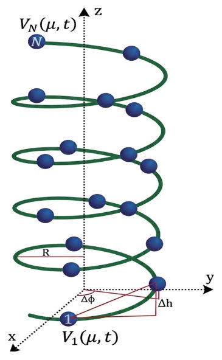
<figcaption class="paper-figure-caption"><b>Fig 1.</b> FIG. 1: (Color online). Schematic illustration of a right- handed single-stranded helical molecule sandwiched between two reservoirs kept at the same chemical potential, as a pump- ing device. R represents the radius, ∆ϕ is the twisting angle, and ∆h denotes the stacking distance between the neighbor- ing lattice sites.</figcaption>
</figure>
<figure class="paper-figure-card">
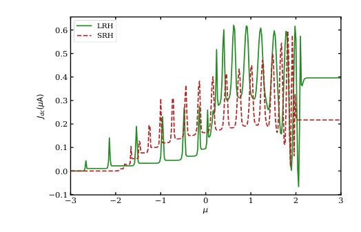
<figcaption class="paper-figure-caption"><b>Fig 2.</b> FIG. 3: (Color online). The pumped dc current as a function of normalized chemical potential (µ) for LRH and SRH con- figurations, with Vp = 0.5, Ω= 0.01, and δ = π/2.</figcaption>
</figure>
<figure class="paper-figure-card">
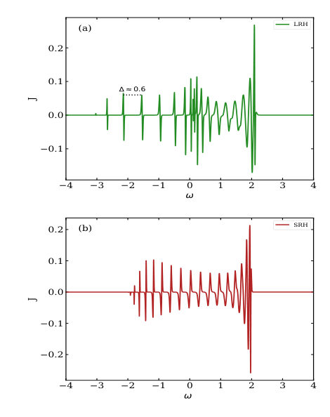
<figcaption class="paper-figure-caption"><b>Fig 3.</b> FIG. 2: (Color online). The current spectral function versus the electron energy for (a) LRH and (b) SRH configurations with Vp = 0.5 and Ω= 0.01.</figcaption>
</figure>
<figure class="paper-figure-card">
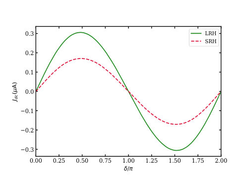
<figcaption class="paper-figure-caption"><b>Fig 4.</b> FIG. 4: (Color online). The pumped dc current as a function of the phase lag (δ) for LRH and SRH configurations with µ = 0.5, Vp = 0.5, and Ω= 0.01.</figcaption>
</figure>
<figure class="paper-figure-card">
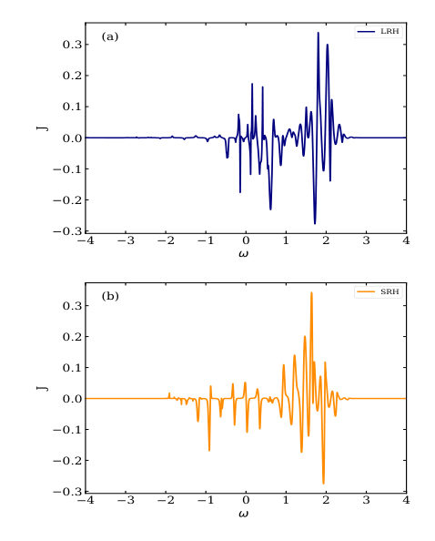
<figcaption class="paper-figure-caption"><b>Fig 5.</b> FIG. 6: (Color online). The current spectral function versus the energy (ω) for (a) LRH and (b) SRH configurations with Vp = 0.5, Ω= 0.3, and δ = π/2.</figcaption>
</figure>
</div>

<p><strong>Summary.</strong> The paper theoretically investigates quantum charge pumping in helical nanostructures by comparing short-range versus long-range electron hopping models. Using the Keldysh NEGF formalism, the authors find that long-range hopping facilitates robust, plateau-like DC currents characteristic of adiabatic pumping. Crucially, they demonstrate that the structural decay exponent ($\ell_c$) provides a geometric control mechanism to tune this quantum current.</p>
<p><strong>Why it may be interesting.</strong> This work provides a detailed theoretical framework for understanding how geometric structure (chirality/helicity) and electronic coupling range influence non-equilibrium quantum transport phenomena in low-dimensional molecular conductors.</p>
<details>
<summary>Detailed structure</summary>
<p><strong>Main problem.</strong> The study investigates quantum charge pumping mechanisms in single-stranded helical structures by comparing the effects of short-range versus long-range electron hopping.</p>
<p><strong>Main result.</strong> Long-range hopping (LRH) leads to pronounced plateau-like regions in the pumped DC current under adiabatic conditions, while the decay exponent ($\ell_c$) acts as a structural knob to tune this current. Short-range hopping (SRH) yields less robust and more parameter-sensitive currents.</p>
<p><strong>Method.</strong> The Keldysh non-equilibrium Green's function (NEGF) approach is employed to calculate time-dependent transport properties, utilizing the Floquet representation for periodically driven systems.</p>
<p><strong>Model / system.</strong> The system is a single-stranded helical molecule modeled by a tight-binding Hamiltonian incorporating both short-range and long-range hopping terms. The structure is subjected to time-periodic potentials applied at its ends.</p>
<p><strong>Key observables.</strong> Spectral current, pumped DC current ($J_{dc}$), dependence of $J_{dc}$ on chemical potential ($\mu$), phase lag ($\delta$), driving frequency ($\Omega$), and amplitude ($V_p$).</p>
<p><strong>Important parameters / regimes.</strong> Hopping range (SRH vs. LRH), decay exponent ($\ell_c$), drive frequency ($\Omega$), and phase difference ($\delta$).</p>
<p><strong>Assumptions / limitations.</strong> The analysis compares adiabatic transport regimes (low $\Omega$) with high-frequency, non-adiabatic dynamics; the use of NEGF formalism is central to the calculation.</p>
<p><strong>Figures summary.</strong> Figures illustrate $J_{dc}$ vs. $\mu$ showing plateaus for LRH in the adiabatic limit; they also show the dependence on phase lag ($\delta$), driving amplitude ($V_p$), and spectral function comparisons across different hopping regimes and frequencies.</p>
<p><strong>Paper structure.</strong> The paper systematically compares the theoretical predictions of quantum charge pumping using NEGF, first establishing the model Hamiltonian for helical systems, then analyzing the distinct transport signatures arising from LRH versus SRH under varying driving conditions ($\Omega$, $\delta$).</p>
</details>
<details>
<summary>Abstract</summary>
<p>Using the Keldysh non-equilibrium Green's function approach, we investigate charge pumping through a single-stranded helical structure described by a tight-binding model that includes either short-range hopping (SRH) or long-range hopping (LRH). While quantum pumping has been studied in various low-dimensional systems, the detailed behavior of the spectral current and the pumped dc current in helical geometries in the presence of higher-order electron hopping (beyond nearest neighbors) has not yet been systematically explored. Here, we focus on the interplay between helicity and extended hopping ranges, analyzing how they jointly control the energy-resolved and dc pumped currents under time-periodic end potentials. For LRH, the pumped dc current exhibits pronounced plateau-like regions as a function of chemical potential when energy levels are sparsely spaced -- consistent with adiabatic transport -- whereas SRH yields more parameter-sensitive currents without clear plateaus. The plateau stability is controlled by the drive frequency: at higher frequencies, Floquet side-band mixing destroys the plateaus, leading to oscillatory currents. The phase dependence remains nearly sinusoidal, and the current vanishes at zero phase lag, confirming the necessity of out-of-phase potentials. Crucially, in helical systems, the decay exponent $(\ell_c)$ acts as an effective structural parameter that can tune both the magnitude and sign of the pumped current, offering a geometric knob for controlling quantum pumping. Our findings not only fill a gap in the understanding of spectral and pumped currents in helical systems with extended hopping but also provide tools that can be applied to analyze similar phenomena in other chiral or quasi-one-dimensional systems.</p>
</details>
<p><sub><a href="#top">↑ back to top</a></sub></p>

<p><a id="paper-2606.12813"></a></p>
<h3 id="accidental-symmetry-in-the-tavis-cummings-model-via-the-schwinger-boson-representation"><a href="http://arxiv.org/abs/2606.12813v1">Accidental Symmetry in the Tavis-Cummings Model via the Schwinger Boson Representation</a></h3>
<p><strong>Authors:</strong> Plato Deliyannis, Iman Marvian<br>
<strong>Type:</strong> theory · <strong>Category:</strong> other · <strong>PDF:</strong> <a href="https://arxiv.org/pdf/2606.12813v1">https://arxiv.org/pdf/2606.12813v1</a><br>
<strong>Analysis basis:</strong> full PDF text, analyzed in chunks
<strong>Topic relevance:</strong> 🔥 <code>Tavis-Cummings &amp; cavity-many-emitter</code> <strong>4/5</strong> · <code>analog quantum simulation</code> <strong>3/5</strong> · <code>correlated cavity matter</code> <strong>3/5</strong> · <code>entanglement &amp; information structure</code> <strong>2/5</strong> · <code>Keldysh / 2PI / non-Gaussian methods</code> <strong>1/5</strong> · <code>driven-dissipative phase transition</code> <strong>1/5</strong> · <code>methods for driven-dissipative</code> <strong>1/5</strong> · <code>superradiant laser</code> <strong>1/5</strong></p>
<div class="figure-strip-hint">↔ Scroll figures horizontally</div>
<div class="paper-figures-scroll">
<figure class="paper-figure-card">
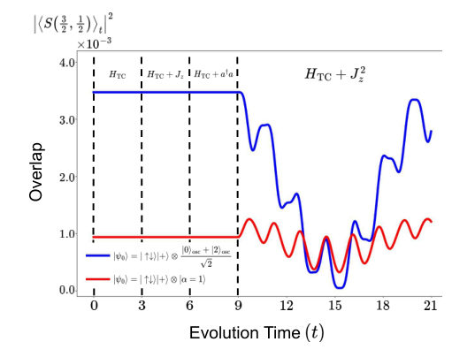
<figcaption class="paper-figure-caption"><b>Fig 1.</b> FIG. 1. Conservation law associated with the accidental symme- try. Example of a 3-qubit system illustrating the conservation law, which holds for time evolution under Hamiltonians HTC, Jz, and a†a, but is violated by HTC + J2 z . The vertical axis shows the ab- solute value of the expectation | ⟨ψ(t)|S(3/2, 1/2)|ψ(t)⟩|, where op- erator S(3/2, 1/2) is defined in Sec.(IV). Qubits are initialized in the product state |↑⟩|↓⟩|+⟩, with |+⟩= (|↑⟩+ |↓⟩)/ √</figcaption>
</figure>
<figure class="paper-figure-card">
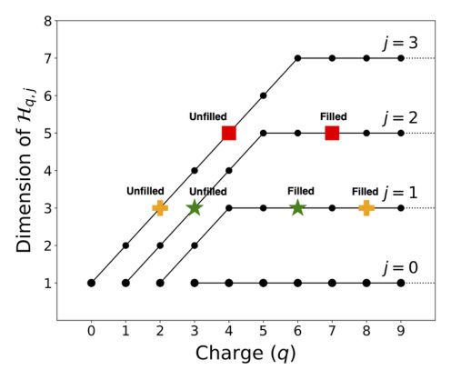
<figcaption class="paper-figure-caption"><b>Fig 2.</b> FIG. 2. Accidental symmetry of TC Hamiltonian: (6-qubit exam- ple). For each pair of angular momenta j &gt; j′, there is a single pair of sectors Hq,j and Hq′,j′ related by the accidental symmetry. Diagrammatically, these sectors lie along the horizontal line which represents dimension 2j′ +1: the maximum dimension allowed for a sector with angular momentum j′. Observe that for each j &gt; j′ &gt; 0, there is a single angular momentum j sector Hq,j with this dimen- sion. Then, the difference in charges q and q′ is q′ −q = 3(j −j′), i.e. thrice the difference in angular momenta. For example, the red square indicates the pair for j = 3 and j′ = 2, the yellow cross j = 3 and j′ = 1, and the green star...</figcaption>
</figure>
<figure class="paper-figure-card">
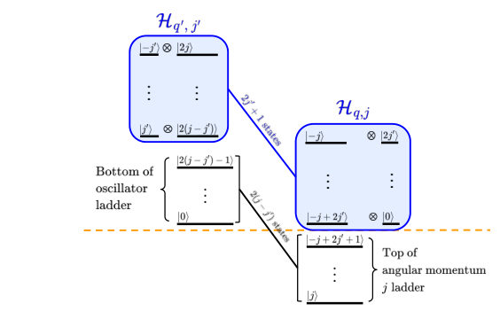
<figcaption class="paper-figure-caption"><b>Fig 3.</b> FIG. 3. Illustration of a pair of sectors related by the accidental sym- metry, as described in Theorem 1. Sector Hq,j is unfilled, while sector Hq′,j′ is filled, meaning it carries a full irrep of SU(2). The matrix elements of HTC in these two sectors, given in Eq.(40), are identical.</figcaption>
</figure>
<figure class="paper-figure-card">
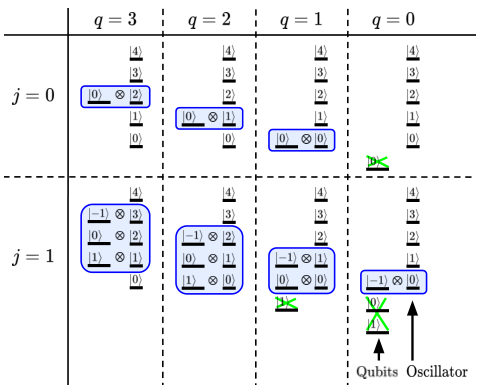
<figcaption class="paper-figure-caption"><b>Fig 4.</b> FIG. 4. 2-qubit example: Blue boxes indicate invariant subspaces of any PI, U(1)-invariant operator acting on n = 2 qubits coupled to a bosonic mode. The states are in the format |m⟩⊗|k⟩, where m and k are eigenvalues of Jz and a†a, respectively. Note that there are two types of 1D invariant sectors: states in the form |j = 0, m = 0⟩⊗|k⟩ for all k ≥0, and the state |j = 1, m = −1⟩⊗|k = 0⟩. All of these 1D sectors have eigenvalue 0 of HTC. The accidental symmetry pairs |j = 1, m = −1⟩⊗|k = 0⟩and |j = 0, m = 0⟩|k = 2⟩and implies they should have the same eigenvalue, a constraint that is not necessarily satisfied by arbitrary PI, U(1)-invariant Hamiltonians.</figcaption>
</figure>
<figure class="paper-figure-card">
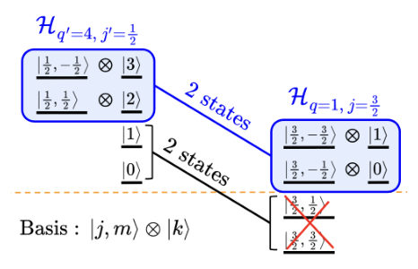
<figcaption class="paper-figure-caption"><b>Fig 5.</b> FIG. 5. 3-qubit Example: two sectors related by accidental symme- try</figcaption>
</figure>
</div>

<p><strong>Summary.</strong> The paper uncovers a previously unnoticed 'accidental' symmetry within the Tavis-Cummings Hamiltonian governing light-matter interaction in multi-qubit systems. By employing advanced algebraic techniques using Schwinger bosons, the authors prove that this symmetry imposes strong constraints on system evolution. This finding has significant implications for understanding the controllability and theoretical limits of quantum computing architectures based on such interactions.</p>
<p><strong>Why it may be interesting.</strong> This work provides deep structural insights into complex many-body quantum models, revealing symmetries that are not obvious from simple inspection. Such accidental symmetries are crucial for understanding model limitations and designing robust quantum control schemes in cavity QED or superconducting circuit platforms.</p>
<details>
<summary>Detailed structure</summary>
<p><strong>Main problem.</strong> The primary goal is identifying an additional, independent 'accidental' symmetry within the Tavis-Cummings (TC) Hamiltonian that goes beyond standard permutation and U(1) symmetries.</p>
<p><strong>Main result.</strong> This accidental symmetry imposes strong constraints on the system's unitary evolution, leading to relationships between otherwise distinct quantum sectors of the Hilbert space.</p>
<p><strong>Method.</strong> The analysis uses advanced techniques involving Schwinger boson representations of angular momentum and classifying invariant subspaces based on charge and angular momentum quantum numbers.</p>
<p><strong>Model / system.</strong> The model is the Tavis-Cummings (TC) Hamiltonian, describing $n$ identical qubits coupled to a single bosonic mode. The system's dynamics are analyzed in terms of total angular momentum operators ($J_\pm$) and bosonic occupation number ($a^\dagger a$).</p>
<p><strong>Key observables.</strong> Conserved observables derived from the accidental symmetry, such as specific expectation values related to sector couplings $S_{j, j'}$ or the second moment $\langle H^2 	ext{TC}(\phi) 
angle$.</p>
<p><strong>Important parameters / regimes.</strong> $n$ (number of qubits), coupling strength ($g_{TC}$), and bosonic frequency ($\omega_{osc}$). The analysis is particularly relevant for $n \ge 3$ qubits.</p>
<p><strong>Assumptions / limitations.</strong> The analysis assumes the validity of specific algebraic mappings derived from Schwinger's boson representation, which allows relating different sectors of the Hilbert space.</p>
<p><strong>Figures summary.</strong> Figures illustrate the conservation law associated with the accidental symmetry by comparing evolution under standard Hamiltonians versus violation under $J_z^2$. They also show pairs of unitarily equivalent sectors (one filled, one unfilled) related by the symmetry transformation.</p>
<p><strong>Paper structure.</strong> The paper progresses from identifying known symmetries to proposing and characterizing a new 'accidental' symmetry. It then uses algebraic methods (Schwinger representation) and detailed calculations (second moment analysis) to prove the existence and implications of this hidden symmetry on system dynamics and controllability.</p>
</details>
<details>
<summary>Abstract</summary>
<p>The Jaynes-Cummings (JC) Hamiltonian is a paradigmatic model of light-matter interaction and, more generally, qubit-boson interactions, widely used across atomic, optical, and superconducting qubit platforms. In the multi-qubit setting, where n qubits are identically coupled to a single boson mode, this interaction is known as the Tavis-Cummings (TC) Hamiltonian. The structure of the TC model is usually understood in terms of two standard symmetries: permutation invariance of the qubits and a U(1) symmetry associated with conservation of the total excitation number. Here we identify an additional, independent "accidental" symmetry of the TC Hamiltonian and construct the corresponding conserved observable. We show that, for n&gt;2 qubits, this symmetry imposes strong constraints on the realizable unitary transformations. These constraints persist in the presence of the global $J_z$ Hamiltonian, but are removed by adding $J_z^2$, even though $J_z^2$ preserves both permutation invariance and the U(1) symmetry. Finally, we explain the origin of this previously unnoticed symmetry using Schwinger's boson representation of angular momentum. These restrictions have important implications for controllability of the TC system and for its applications to quantum computing, which are investigated further in a companion paper.</p>
</details>
<p><sub><a href="#top">↑ back to top</a></sub></p>

<p><a id="paper-2606.12968"></a></p>
<h3 id="quantum-driven-neuromorphic-computing-for-million-qubit-scale-workloads"><a href="http://arxiv.org/abs/2606.12968v1">Quantum-Driven Neuromorphic Computing for Million-Qubit-Scale Workloads</a></h3>
<p><strong>Authors:</strong> Adams Ivanov, Samer Rahmeh, Erick Giovani Sperandio Nascimento, Daniela Herrmann<br>
<strong>Type:</strong> both · <strong>Category:</strong> disordered systems and neural networks · <strong>PDF:</strong> <a href="https://arxiv.org/pdf/2606.12968v1">https://arxiv.org/pdf/2606.12968v1</a><br>
<strong>Analysis basis:</strong> full PDF text, analyzed in chunks
<strong>Topic relevance:</strong> 🔥 <code>QC/QI experiment</code> <strong>4/5</strong> · <code>exotic spin models in light-matter</code> <strong>3/5</strong> · <code>driven-dissipative phase transition</code> <strong>2/5</strong> · <code>non-equilibrium dynamics</code> <strong>2/5</strong> · <code>analog quantum simulation</code> <strong>1/5</strong> · <code>correlated / nonlocal dissipation</code> <strong>1/5</strong> · <code>methods for driven-dissipative</code> <strong>1/5</strong> · <code>non-equilibrium universality</code> <strong>1/5</strong> · <code>spintronics-quantum-optics interface</code> <strong>1/5</strong></p>
<div class="figure-strip-hint">↔ Scroll figures horizontally</div>
<div class="paper-figures-scroll">
<figure class="paper-figure-card">
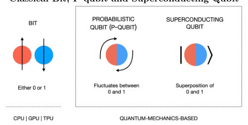
<figcaption class="paper-figure-caption"><b>Fig 1.</b> Fig. 1: Illustration of a classical bit with a definite state of 0 or 1; a p-qubit based on a quantum-driven analog qubit representation, which exhibits stochastic fluctuations between 0 and 1; and a qubit, which occupies a coherent superposition of the basis states 0 and 1.</figcaption>
</figure>
<figure class="paper-figure-card">
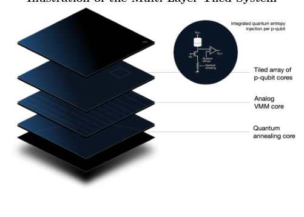
<figcaption class="paper-figure-caption"><b>Fig 2.</b> Fig. 2: Illustration of the multi-layer tiled system, including (i) a tiled arrangement of p-qubit cores, (ii) an analog CMM (correlation matrix memory) core, and (iii) a quantum annealing core.</figcaption>
</figure>
<figure class="paper-figure-card">
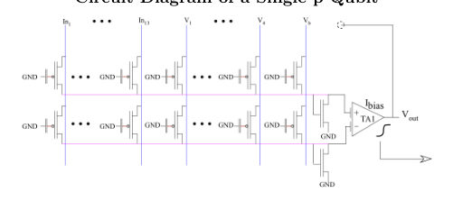
<figcaption class="paper-figure-caption"><b>Fig 3.</b> Fig. 3: Circuit diagram of a single p-qubit within the p-qubit network and its corresponding output path. The p-qubit receives its local field I through the FG-based vector–matrix multiplication (VMM) array, where weighted currents from neighbouring p-qubits are summed in the analog domain. This input current is combined with the quantum-mechanical entropy injection delivered by the co-located IQEU. Both contributions feed into a nine-transistor operational transconductance amplifier (OTA), whose bias current Ibias controls the operating point and nonlinear gain. The OTA produces a smooth sigmoidal voltage response that approximates a tanh activation function, setting the instantaneous...</figcaption>
</figure>
<figure class="paper-figure-card">
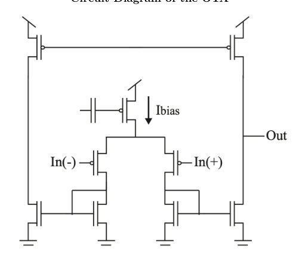
<figcaption class="paper-figure-caption"><b>Fig 4.</b> Fig. 4: The operational transconductance amplifier (OTA) is implemented as a nine-transistor OTA block. It receives two input currents: (a) the local field I generated by the p-qubit network through the FG-based weighted-sum VMM, and (b) the quantum-mechanical entropy input supplied by the associated IQEU. The bias current Ibias sets the OTA’s operating point and transconductance. The OTA outputs an analog sigmoidal transfer characteristic, providing the nonlinear activation that governs each p-qubit’s probabilistic switching behaviour.</figcaption>
</figure>
<figure class="paper-figure-card">
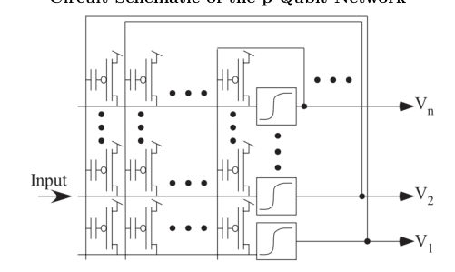
<figcaption class="paper-figure-caption"><b>Fig 5.</b> Fig. 5: Circuit schematic of the p-qubit network. The inputs are weighted and summed using a VMM made of FG pFETs. A TA and I2V circuit takes the weighted current and maps it onto the TA sigmoidal nonlinearity. Both FG and normal TAs are used, and the I2V circuit uses FG pFETs, pFETs, and nFETs as shown. A bias element keeps an initial constant current in the row.</figcaption>
</figure>
</div>

<p><strong>Summary.</strong> This paper introduces Apollo, a novel neuromorphic processor that achieves performance equivalent to superconducting quantum annealers at room temperature. It accomplishes this by using p-qubits whose stochastic fluctuations are driven by integrated quantum entropy units. This establishes a scalable, energy-efficient platform for solving hard optimization problems in classical CMOS technology.</p>
<p><strong>Why it may be interesting.</strong> It provides a concrete, solid-state realization of quantum-inspired computation principles—specifically mapping complex Hamiltonian dynamics onto classical, room-temperature stochastic processes driven by fundamental quantum noise sources.</p>
<details>
<summary>Detailed structure</summary>
<p><strong>Main problem.</strong> Developing a scalable, room-temperature hardware platform capable of solving complex optimization problems by mimicking quantum annealing dynamics without cryogenic cooling.</p>
<p><strong>Main result.</strong> The Apollo processor demonstrates quantum-equivalent performance on spin-glass benchmarks at ambient temperature, establishing a viable path for energy-based computation outside superconducting circuits.</p>
<p><strong>Method.</strong> The work combines theoretical mapping (Suzuki–Trotter correspondence) with experimental realization using continuous-time stochastic dynamics in CMOS electronics.</p>
<p><strong>Model / system.</strong> Apollo is a 10,000-node p-qubit neuromorphic processor fabricated in 16 nm CMOS. Its core element, the p-qubit, uses quantum-derived entropy to drive bistable stochastic transitions, allowing it to sample energy landscapes governed by Ising/QUBO Hamiltonians.</p>
<p><strong>Key observables.</strong> Ground state energies relative to cryogenic annealers, residual energy scaling trajectories, and thermodynamic sampling correctness.</p>
<p><strong>Important parameters / regimes.</strong> Room temperature operation ($\sim 0.5 	ext{ W}$), $16 	ext{ nm}$ CMOS fabrication, Hyperion $\Delta 256$ interconnect topology.</p>
<p><strong>Assumptions / limitations.</strong> The dynamics of the p-qubit network correctly reproduce the equilibrium statistics and annealing behavior previously associated with quantum tunneling mechanisms.</p>
<p><strong>Figures summary.</strong> Figures illustrate the multi-layer tiled architecture (p-qubit cores, CMM core), the circuit diagram of a single p-qubit integrating VMM and IQEU inputs into an OTA nonlinearity, and the sigmoidal response curve.</p>
<p><strong>Paper structure.</strong> The paper progresses from identifying limitations in existing quantum/classical annealers to proposing the Apollo architecture. It details the physical implementation (VMM using FG pFETs) and validates its ability to perform energy-based optimization via continuous-time stochastic relaxation, culminating in benchmark results.</p>
</details>
<details>
<summary>Abstract</summary>
<p>We introduce Apollo, a 10000 node p-qubit neuromorphic processor fabricated in 16 nm mixed signal CMOS and operating fully at room temperature with a typical analog core power envelope of about 0.5 W. Its fundamental element, the p-qubit, is a bistable stochastic unit whose continuous time state fluctuations are driven by integrated quantum entropy units that inject true quantum derived randomness. This enables ultrafast stochastic transitions at low energy while preserving a classical state representation. Apollo combines these p-qubits with a high degree Hyperion 256 interconnect topology, allowing efficient embedding of dense Ising and QUBO problems with substantially reduced minor embedding overhead compared with sparse annealing platforms. We show that, through the Suzuki Trotter correspondence, the equilibrium statistics and annealing dynamics of the p-qubit network reproduce key properties of transverse field quantum annealing without cryogenic cooling, long lived coherence, or microwave control. Beyond device level validation, Apollo is evaluated on a three dimensional spin glass benchmark previously used to study quantum advantage in superconducting annealers. Across 300 disorder realizations, Apollo reaches substantially lower ground state energies than reported cryogenic quantum annealing hardware, while remaining distinct from classical simulated annealing and simulated quantum annealing. A 350 nm release candidate device experimentally validates the core p-qubit dynamics, thermodynamic sampling correctness, and continuous time annealing behavior. These results establish Apollo as a room temperature, industrially scalable platform for quantum driven energy based optimization, probabilistic inference, generative modeling, and hybrid classical quantum workflows.</p>
</details>
<p><sub><a href="#top">↑ back to top</a></sub></p>

<p><a id="paper-2606.13502"></a></p>
<h3 id="quasi-2d-trapped-tilted-dipoles-at-zero-and-finite-temperatures-in-the-strongly-dipolar-regime"><a href="http://arxiv.org/abs/2606.13502v1">Quasi-2D trapped tilted dipoles at zero and finite temperatures in the strongly dipolar regime</a></h3>
<p><strong>Authors:</strong> Juan Sánchez-Baena<br>
<strong>Type:</strong> theory · <strong>Category:</strong> quantum gases · <strong>PDF:</strong> <a href="https://arxiv.org/pdf/2606.13502v1">https://arxiv.org/pdf/2606.13502v1</a><br>
<strong>Analysis basis:</strong> full PDF text, analyzed in chunks
<strong>Topic relevance:</strong> 🔥 <code>analog quantum simulation</code> <strong>4/5</strong> · <code>Keldysh / 2PI / non-Gaussian methods</code> <strong>3/5</strong> · <code>methods for driven-dissipative</code> <strong>3/5</strong> · <code>driven-dissipative phase transition</code> <strong>2/5</strong> · <code>correlated cavity matter</code> <strong>1/5</strong> · <code>non-equilibrium dynamics</code> <strong>1/5</strong> · <code>non-equilibrium universality</code> <strong>1/5</strong></p>
<div class="figure-strip-hint">↔ Scroll figures horizontally</div>
<div class="paper-figures-scroll">
<figure class="paper-figure-card">
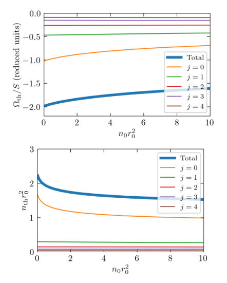
<figcaption class="paper-figure-caption"><b>Fig 1.</b> FIG. 1. Contributions of the different axial excitation modes to the density functionals Ωth</figcaption>
</figure>
<figure class="paper-figure-card">
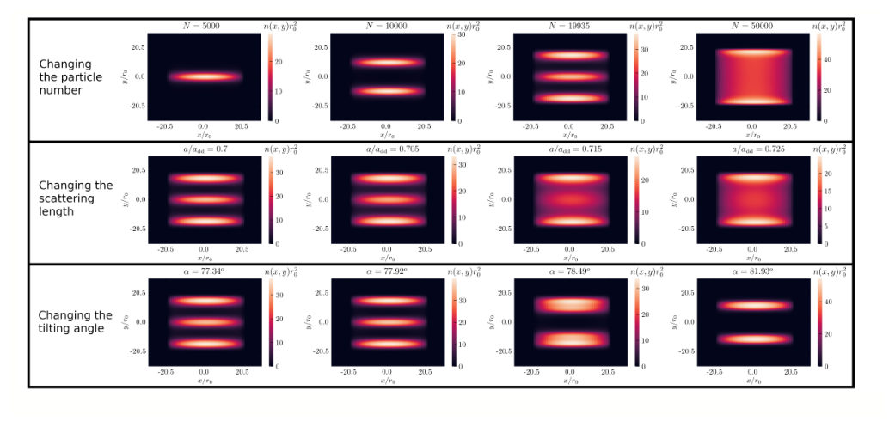
<figcaption class="paper-figure-caption"><b>Fig 2.</b> FIG. 2. Integrated 2D density distribution (n = R dz|ψ(r)|2) of the dipolar system in a box trap at zero temperature. In each row, one parameter is varied while the rest are fixed to the values a/add = 0.7, α = 77.35o, N = 19935. The box trap has widths Lx/r0 = Ly/r0 = 41.02 while the axial harmonic trap is set to ℏω/E0 = 1.</figcaption>
</figure>
<figure class="paper-figure-card">
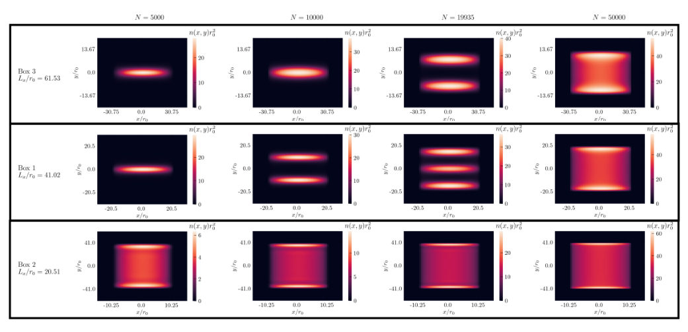
<figcaption class="paper-figure-caption"><b>Fig 3.</b> FIG. 3. Integrated 2D density distribution (n = R dz|ψ(r)|2) of the dipolar system for box traps with different aspect ratios at zero temperature. Each column and row correspond to a different particle number and box trap, respectively. In each column, the average 2D density is kept fixed. The widths along the y-axis of each box trap are given by Ly/r0 = 41.02 for Box 1, Ly/r0 = 82.04 for Box 2 and Ly/r0 = 27.36 for Box 3. The rest of the parameters of the calculations are a/add = 0.7, α = 77.35o and ℏω/E0 = 1.</figcaption>
</figure>
<figure class="paper-figure-card">
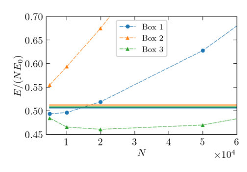
<figcaption class="paper-figure-caption"><b>Fig 4.</b> FIG. 4. Energy per particle as a function of N for the tilted dipolar system in three different box traps. The dashed- dotted lines correspond to the results of the interacting system while the solid lines correspond to the trapped ideal gas. The parameters of the calculations are the same as in Fig. 3.</figcaption>
</figure>
<figure class="paper-figure-card">
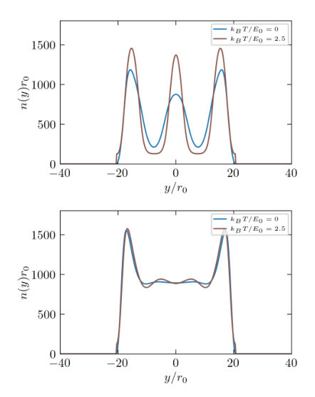
<figcaption class="paper-figure-caption"><b>Fig 5.</b> FIG. 6. Total column density n(y) = R dxdz |ψ(r)|2 + R dx nth(r⊥) at zero and finite temperature for N = 25000 (top) and N = 40000 (bottom). The rest of the parameters are the same as in Fig. 5.</figcaption>
</figure>
</div>

<p><strong>Summary.</strong> This theoretical study analyzes trapped dipolar quantum gases confined to a quasi-2D geometry, focusing on the interplay between strong dipole interactions and finite temperature effects. Using Bogoliubov theory, the authors derive an extended Gross-Pitaevskii equation that accounts for thermal fluctuations. The results show how temperature can induce spatial modulations in the density profile, providing insights into supersolid physics and potential thermometry applications.</p>
<p><strong>Why it may be interesting.</strong> This work directly addresses complex many-body physics in ultracold atomic systems (dipolar BECs) by extending mean-field theory to include thermal fluctuations in a quasi-2D geometry, which is crucial for understanding exotic phases like supersolids.</p>
<details>
<summary>Detailed structure</summary>
<p><strong>Main problem.</strong> The study investigates the physics of quasi-2D trapped dipolar Bose-Einstein Condensates (BECs) at both zero and finite temperatures in the strongly dipolar regime.</p>
<p><strong>Main result.</strong> The research characterizes how increasing temperature can promote spatial modulations in the density profile, qualitatively agreeing with 3D Monte Carlo results. The theory also provides tools to assess thermal effects for potential thermometry applications.</p>
<p><strong>Method.</strong> Bogoliubov theory and the Local Density Approximation (LDA) are employed to derive a finite-temperature Gross-Pitaevskii equation (TeGPE).</p>
<p><strong>Model / system.</strong> The system consists of fully polarized dipoles trapped harmonically along the z-axis and in a box trap in the x-y plane. The interactions include contact and strong dipole-dipole interaction (DDI), making it relevant for dipolar supersolid stripes.</p>
<p><strong>Key observables.</strong> Total column density, condensate fraction ($f_c$), spatial modulations/stripes, and thermal density profiles ($n_{th}$).</p>
<p><strong>Important parameters / regimes.</strong> Tilting angle ($\alpha$), particle number ($N$), scattering length ($a$), and temperature ($T$). The strongly dipolar regime is key ($a \ll a_{dd}$).</p>
<p><strong>Assumptions / limitations.</strong> The analysis restricts itself to the limit of large condensate fractions ($f_c \geq 0.6$) and assumes the applicability of Bogoliubov theory, which breaks down in infinite 2D systems.</p>
<p><strong>Figures summary.</strong> Figures illustrate density changes by varying particle number or scattering length at zero T; they also compare 2D densities at $T=0$ versus finite $T$, showing temperature-induced modulations.</p>
<p><strong>Paper structure.</strong> The paper builds from the general framework (Bogoliubov theory) to derive the TeGPE incorporating thermal fluctuations via LDA. It then analyzes structural changes by varying key parameters ($N, \alpha, T$) and concludes with applications for thermometry.</p>
</details>
<details>
<summary>Abstract</summary>
<p>Motivated by the recent experimental observation of dipolar supersolid stripes in a quasi two-dimensional geometry [arXiv:2512.13280 (2025)], we study a trapped system of fully polarized dipoles in a strongly axially confined geometry, both at zero and finite temperatures, by means of Bogoliubov theory. The dipoles are strongly harmonically trapped along the z axis and subjected to a box trap in the x-y plane. We characterize the physics of the trapped system at zero and finite temperatures as a function of the tilting angle of the dipoles, the number of particles and the scattering length, restricting ourselves to the experimentally relevant regime of large condensate fractions. We also illustrate the influence of the aspect ratio of the box trap in the liquid character of the system and its structure. We observe a remarkable promotion of spatial modulations when temperature is increased while keeping the total particle number constant for specific configurations, in qualitative agreement with previous Monte Carlo results in a 3D geometry. Our results are useful to understand the zero temperature physics of the trapped dipolar system in the quasi-2D limit and in the strongly dipolar regime. In addition, they allow to assess the effect of temperature in its equilibrium properties in experimentally relevant conditions, which may be useful for thermometry applications.</p>
</details>
<p><sub><a href="#top">↑ back to top</a></sub></p>

<p><a id="paper-2606.12545"></a></p>
<h3 id="spectral-analysis-of-equilibration-information-leakage-in-isolated-quantum-systems"><a href="http://arxiv.org/abs/2606.12545v1">Spectral analysis of equilibration: information leakage in isolated quantum systems</a></h3>
<p><strong>Authors:</strong> André T. Cesário, Marcos G. Alpino, Reinaldo O. Vianna, Tiago Debarba<br>
<strong>Type:</strong> theory · <strong>Category:</strong> statistical mechanics · <strong>PDF:</strong> <a href="https://arxiv.org/pdf/2606.12545v1">https://arxiv.org/pdf/2606.12545v1</a><br>
<strong>Analysis basis:</strong> full PDF text, analyzed in chunks
<strong>Topic relevance:</strong> 🔥 <code>entanglement &amp; information structure</code> <strong>4/5</strong> · <code>non-equilibrium dynamics</code> <strong>3/5</strong> · <code>non-equilibrium universality</code> <strong>2/5</strong> · <code>Keldysh / 2PI / non-Gaussian methods</code> <strong>1/5</strong> · <code>analog quantum simulation</code> <strong>1/5</strong> · <code>correlated / nonlocal dissipation</code> <strong>1/5</strong> · <code>driven-dissipative phase transition</code> <strong>1/5</strong> · <code>methods for driven-dissipative</code> <strong>1/5</strong> · <code>scars &amp; prethermalization</code> <strong>1/5</strong></p>
<div class="figure-strip-hint">↔ Scroll figures horizontally</div>
<div class="paper-figures-scroll">
<figure class="paper-figure-card">
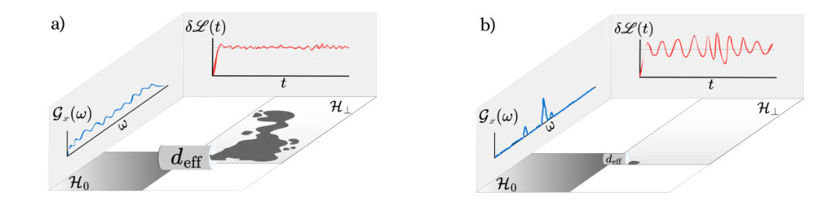
<figcaption class="paper-figure-caption"><b>Fig 1.</b> Figure 1: Illustrative Image of Leakage Fidelity. In both panels, the floor illustrates the state distribution within the Hilbert space H = H0 ⊕H⊥. The side wall represents the spectral power density GL(ω) = |δL (ω)|2 as a function of the Hamiltonian spectrum, in an energy shell ω. The front wall shows the Leakage Fidelity Function L (t) as a function of time. Panel a) illustrates an isolated equilibrating system, where ρ(t) ∈H0 ⊕H⊥for all times t →T. In this case, the spectral power density GL(ω) spreads over the entire energy spectrum, and the LFF signal δL (t) = |L (t) −⟨L (t)⟩T | exhibits small fluctuations around its average equilibrium value. Panel b) illustrates a quasi- periodic...</figcaption>
</figure>
<figure class="paper-figure-card">
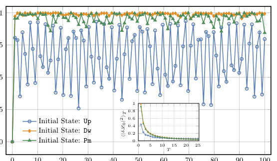
<figcaption class="paper-figure-caption"><b>Fig 2.</b> Figure 2: Time evolution of L0(t) for three different initial states, together with the corresponding running time- averaged quadratic deviation from equilibrium shown in the inset, δL0(t) = L0(t) −L ∞ 0 . The all spin up state (Up = |↑· · · ↑⟩) exhibits large and persistent oscillations, indicating stronger nonequilibrium fluctuations throughout the dynamics. By contrast, down (Dw = |↓· · · ↓⟩) and paramagnetic (Pm = |↑↓· · · ↑↓⟩) state remain much closer to L ∞ 0 , displaying smoother behavior and a faster decay of the averaged fluctuation measure. This comparison makes explicit that states with similar energetic scales may nevertheless present markedly different dynamics, depending on...</figcaption>
</figure>
<figure class="paper-figure-card">
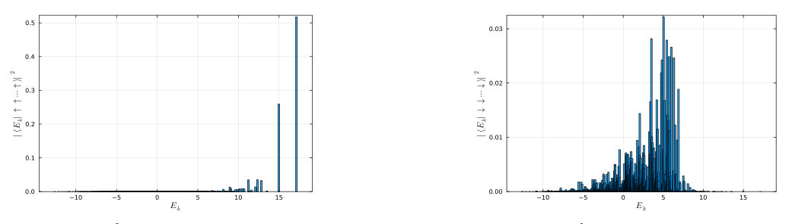
<figcaption class="paper-figure-caption"><b>Fig 3.</b> Figure 3: Spectral occupation probabilities |⟨Ek|ψ0⟩| 2 as a function of the eigenenergies Ek for a system of N = 10 spin- 1</figcaption>
</figure>
<figure class="paper-figure-card">
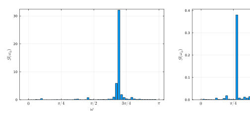
<figcaption class="paper-figure-caption"><b>Fig 4.</b> Figure 4: G(ωk) of the δL0, for ωk = 2πk</figcaption>
</figure>
<figure class="paper-figure-card">
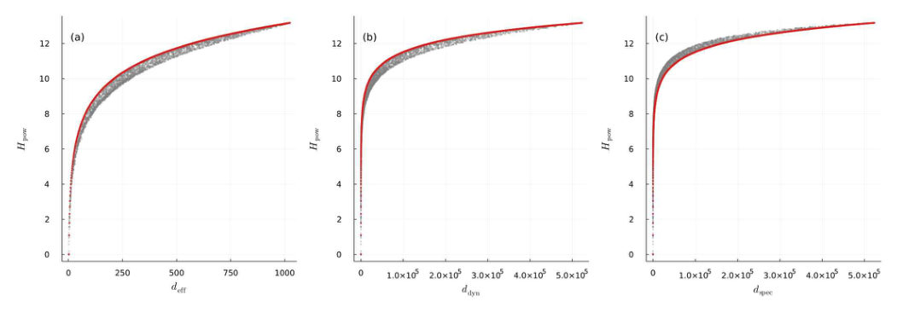
<figcaption class="paper-figure-caption"><b>Fig 5.</b> Figure 5: Power entropy Hpow as a function of different effective dimensionalities for random quantum states gen- erated from an Ising-type Hamiltonian with N = 10 spins, corresponding to a Hilbert-space dimension dE = 210. A total of 5000 random population states were generated in the energy eigenbasis, producing a broad coverage of effective dimensions across the available state space. The red curve corresponds to the K-HUB model, defined by uniform population distributions over K energy levels, for which Hpow is computed analytically as a function of K ∈[2, dE]. This curve provides a structured reference that connects entropy growth to controlled support size. The sampled ensemble spans...</figcaption>
</figure>
</div>

<p><strong>Summary.</strong> This theoretical paper introduces the Leakage Fidelity Function (LFF) as a precise measure of information leakage during equilibration in closed quantum systems. It establishes that the dynamics are controlled not by a single parameter, but by a hierarchy of spectral descriptors—including dynamical and power spectral dimensions—which quantify how fluctuations decay over time.</p>
<p><strong>Why it may be interesting.</strong> This work provides powerful, quantitative diagnostics for open quantum systems theory by moving beyond simple time averages. The distinction between different effective dimensions offers new tools to characterize the rate and nature of thermalization in complex many-body models.</p>
<details>
<summary>Detailed structure</summary>
<p><strong>Main problem.</strong> The paper develops a quantitative framework to measure equilibration in isolated quantum systems by analyzing how information leaks from an initial subspace over time.</p>
<p><strong>Main result.</strong> Equilibration dynamics are governed by a hierarchy of spectral descriptors—ordinary, dynamical, and power spectral effective dimensions—which provide a state-dependent view of irreversibility.</p>
<p><strong>Method.</strong> The core method involves defining the Leakage Fidelity Function (LFF) and deriving universal bounds on its temporal fluctuations using spectral analysis techniques like Fourier transforms and entropy measures.</p>
<p><strong>Model / system.</strong> The theory is applied to isolated quantum systems evolving under unitary dynamics, analyzed via projection onto subspaces defined by an initial state's support. Specific examples include Ising-like chains and general many-body Hamiltonians.</p>
<p><strong>Key observables.</strong> Leakage Fidelity Function (LFF), Leakage Coherence ($  ext{Cleak}$), Ordinary Effective Dimension ($d_{    ext{eff}}$), Dynamical Effective Dimension ($d_{ ext{dyn}}$), Power Spectral Entropy ($H_{ ext{pow}}$).</p>
<p><strong>Important parameters / regimes.</strong> Spectral gap structure, effective dimension ($d_{	ext{eff}}$), time scale $T$, and the degree of spectral delocalization.</p>
<p><strong>Assumptions / limitations.</strong> The analysis relies on deriving universal bounds applicable to fixed Hamiltonians; some parts assume Haar-typical state distributions or non-degenerate energy gaps for specific theorems.</p>
<p><strong>Figures summary.</strong> Figures illustrate LFF behavior showing small fluctuations for equilibrating systems versus large oscillations for quasi-periodic ones. Later figures compare the growth patterns of $ ext{deff}$, $   ext{ddyn}$, and $   ext{dspec}$ using synthetic state distributions to separate their physical roles.</p>
<p><strong>Paper structure.</strong> The paper builds from defining the LFF as an operational measure, deriving universal bounds on its variance (Theorem 1), connecting it to spectral properties ($d_{	ext{eff}}$), and finally introducing a hierarchy of descriptors ($ ext{ddyn},  ext{dspec}$) to show that fluctuation dynamics are richer than simple state-space measures.</p>
</details>
<details>
<summary>Abstract</summary>
<p>We develop a unified dynamical-spectral framework for equilibration in isolated quantum systems based on a subspace coarse-graining approach. Central to our formulation is the Leakage Fidelity Function (LFF), defined as the probability that a unitarily evolving state escapes the support of its initial subspace. This quantity provides a direct, operational measure of information flow and memory loss without invoking ensemble assumptions or perturbative arguments. We derive universal bounds on temporal fluctuations of the LFF, in terms of the spectral gap structure and the square of the effective dimension, evincing that large spectral delocalization suppresses fluctuations and guarantees equilibration on average. By introducing spectral power distributions and associated entropic measures, we establish a quantitative link between phase mixing, gap participation, and dynamical stability. We further investigate the equilibration timescale by connecting the LFF to quantum speed limits, thereby revealing the average time required for equilibration. Our results provide a state-dependent, geometrically transparent perspective on how spectral complexity and subspace information leakage jointly govern irreversibility in closed quantum many-body systems.</p>
</details>
<p><sub><a href="#top">↑ back to top</a></sub></p>

<p><a id="paper-2606.12547"></a></p>
<h3 id="vacuum-photon-emission-and-mean-electromagnetic-field-in-pair-creating-external-backgrounds"><a href="http://arxiv.org/abs/2606.12547v1">Vacuum photon emission and mean electromagnetic field in pair-creating external backgrounds</a></h3>
<p><strong>Authors:</strong> I. A. Aleksandrov, E. V. Perelygin, D. V. Chubukov<br>
<strong>Type:</strong> theory · <strong>Category:</strong> other · <strong>PDF:</strong> <a href="https://arxiv.org/pdf/2606.12547v1">https://arxiv.org/pdf/2606.12547v1</a><br>
<strong>Analysis basis:</strong> full PDF text, analyzed in chunks
<strong>Topic relevance:</strong> 🔥 <code>Keldysh / 2PI / non-Gaussian methods</code> <strong>4/5</strong> · <code>methods for driven-dissipative</code> <strong>3/5</strong> · <code>non-equilibrium dynamics</code> <strong>3/5</strong> · <code>non-equilibrium universality</code> <strong>2/5</strong> · <code>correlated / nonlocal dissipation</code> <strong>1/5</strong> · <code>driven-dissipative phase transition</code> <strong>1/5</strong></p>
<div class="figure-strip-hint">↔ Scroll figures horizontally</div>
<div class="paper-figures-scroll">
<figure class="paper-figure-card">
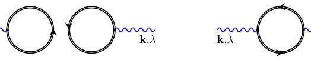
<figcaption class="paper-figure-caption"><b>Fig 1.</b> Figure 1. Two diagrams describing the photon number density (25) to first order in α within the nonequilibrium perturbative framework. The incoming and outgoing photon lines correspond to λ1 = 2 and λ2 = 1, respectively. After the Keldysh-index summation and simplification, they yield Eq. (29).</figcaption>
</figure>
<figure class="paper-figure-card">
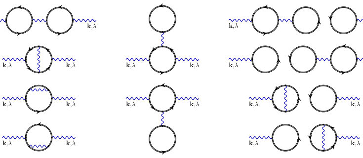
<figcaption class="paper-figure-caption"><b>Fig 2.</b> Figure 2. Ten diagrams describing the photon number density (32) to second order in α within the nonequilibrium perturbative framework. After the Keldysh-index summation and simplification, they yield Eq. (37).</figcaption>
</figure>
</div>

<p><strong>Summary.</strong> This theoretical paper calculates how photons are emitted from the vacuum and determines the mean electromagnetic field when subjected to a strong, pair-creating external background. It employs advanced real-time (Keldysh) techniques necessary because the initial vacuum state is unstable. The results provide high-order perturbative corrections for these fundamental quantum electrodynamic observables.</p>
<p><strong>Why it may be interesting.</strong> The use of the Keldysh formalism to calculate expectation values in unstable quantum vacua is crucial for understanding non-equilibrium quantum optics and field theory effects beyond standard vacuum calculations.</p>
<details>
<summary>Detailed structure</summary>
<p><strong>Main problem.</strong> The paper develops a perturbative description of vacuum radiative processes and calculates the mean electromagnetic field in external, pair-creating electromagnetic backgrounds.</p>
<p><strong>Main result.</strong> They derive the mean photon number density up to order alpha^2 and compute the mean electromagnetic field up to order e^3 using non-equilibrium quantum field theory techniques.</p>
<p><strong>Method.</strong> The primary method is the Keldysh-Schwinger-Fradkin real-time formalism, supplemented by an alternative spectral decomposition approach for consistency checks.</p>
<p><strong>Model / system.</strong> The system is Quantum Electrodynamics (QED) subjected to a general, spacetime-dependent external classical electromagnetic background field capable of inducing electron-positron pair production.</p>
<p><strong>Key observables.</strong> Mean photon number density ($\langle N_\gamma 
angle$) and the mean electromagnetic field ($\langle A_\mu(x) 
angle$).</p>
<p><strong>Important parameters / regimes.</strong> Fine-structure constant (alpha), external background field strength, and the critical scale for pair production.</p>
<p><strong>Assumptions / limitations.</strong> The initial vacuum is unstable due to the external field, necessitating a real-time formalism beyond standard in-out approaches. Calculations are performed perturbatively in the coupling constant.</p>
<p><strong>Figures summary.</strong> Figures illustrate Feynman diagrams contributing to the photon number density calculation at first and second order in alpha, and diagrams describing the mean electromagnetic field correction up to third order in e.</p>
<p><strong>Paper structure.</strong> The paper systematically calculates observables by expanding the generating functional on the Keldysh contour. It presents results for $\langle N_\gamma 
angle$ using diagrammatic methods and an alternative identity-based approach, followed by a detailed calculation of $\langle A_\mu(x) 
angle$ via Schwinger-Dyson equations.</p>
</details>
<details>
<summary>Abstract</summary>
<p>We develop a perturbative description of vacuum radiative processes in quantum electrodynamics with a prescribed external electromagnetic background capable of producing electron-positron pairs. Since the initial vacuum is then unstable and the in- and out-vacua are inequivalent, radiative observables require a real-time formulation beyond the ordinary in-out approach of vacuum-stable QED. Using the Keldysh-Schwinger-Fradkin nonequilibrium technique, we derive the mean number density of emitted photons through the second nonvanishing order in the fine-structure constant. The leading term, of order $α$, reproduces the known vertex and tadpole mechanisms, while the complete order-$α^2$ correction contains interference, loop, and induced-current contributions. We also give an independent derivation based on the spectral decomposition of the identity operator in the in-Fock space, where the photon number density is represented as a sum of squared transition amplitudes and vacuum-disconnected terms are canceled by the optical theorem generalized to an unstable vacuum. In addition, we compute the mean electromagnetic field through order $e^3$, including the electromagnetic dressing of the induced vacuum current, and verify it using the corresponding Schwinger-Dyson equations. The final formulas are expressed in terms of exact solutions and propagators of the Dirac equation in the external background and apply to general spacetime-dependent field configurations.</p>
</details>
<p><sub><a href="#top">↑ back to top</a></sub></p>

<p><a id="paper-2606.13265"></a></p>
<h3 id="frustration-effects-on-the-magnetization-plateau-physics-in-a-trimerized-quantum-spin-12-chain"><a href="http://arxiv.org/abs/2606.13265v1">Frustration effects on the magnetization plateau physics in a trimerized quantum spin-1/2 chain</a></h3>
<p><strong>Authors:</strong> L. M. Ramos, M. Schmidt, F. M. Zimmer<br>
<strong>Type:</strong> theory · <strong>Category:</strong> strongly correlated electrons · <strong>PDF:</strong> <a href="https://arxiv.org/pdf/2606.13265v1">https://arxiv.org/pdf/2606.13265v1</a><br>
<strong>Analysis basis:</strong> full PDF text, analyzed in chunks
<strong>Topic relevance:</strong> 🔥 <code>analog quantum simulation</code> <strong>4/5</strong> · <code>entanglement &amp; information structure</code> <strong>3/5</strong> · <code>exotic spin models in light-matter</code> <strong>3/5</strong> · <code>Frenkel-Kontorova</code> <strong>1/5</strong> · <code>methods for driven-dissipative</code> <strong>1/5</strong> · <code>non-equilibrium dynamics</code> <strong>1/5</strong></p>
<div class="figure-strip-hint">↔ Scroll figures horizontally</div>
<div class="paper-figures-scroll">
<figure class="paper-figure-card">
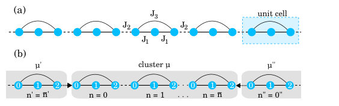
<figcaption class="paper-figure-caption"><b>Fig 1.</b> FIG. 1. (a) Schematic representation of the trimer quantum spin chain with nearest-neighbor exchange interactions J1, J2, and a next-nearest-neighbor exchange interaction J3. The shaded blue region denotes the unit cell of the model. (b) Schematic representation of the CMF approach applied to a trimerized quantum spin chain, in which the infinite chain is partitioned into identical clusters (shaded gray region) of Lc sites. The ¯n represents the last trimer of the central cluster that is equal to ¯n = (Lc −3)/3.</figcaption>
</figure>
<figure class="paper-figure-card">
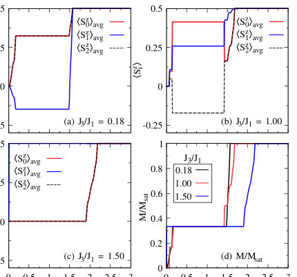
<figcaption class="paper-figure-caption"><b>Fig 2.</b> FIG. 2. Magnetic ground state of the trimerized quantum spin chain obtained from the 12-site CMF method. (a) Lon- gitudinal components of the trimer for J3/J1 = 0.18, (b) Lon- gitudinal components of the trimer for J3/J1 = 1.00, and (c) Longitudinal components of the trimer for J3/J1 = 1.50. (d) Total magnetization normalized by the saturation for different J3/J1. To minimize the boundary effects of the mean fields, we perform a spatial averaging of the local magnetizations over the equivalent trimers within the 12-site CMF approach.</figcaption>
</figure>
<figure class="paper-figure-card">
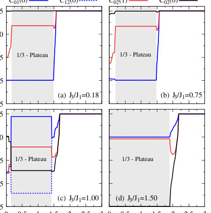
<figcaption class="paper-figure-caption"><b>Fig 3.</b> FIG. 3. Field dependence of the spin–spin correlation func- tions computed within the 12-site CMF approach at zero temperature (T/J1 = 0) for different values of the frustra- tion parameter: (a) J3/J1 = 0.18, (b) J3/J1 = 0.75, (c) J3/J1 = 1.00, and (d) J3/J1 = 1.50. In panels (a), (b) and (d) the correlations C01(0) and C12(0) are equivalent. To mini- mize boundary effects arising from the mean-field treatment, all correlations were computed by averaging over all trimers of the cluster.</figcaption>
</figure>
<figure class="paper-figure-card">
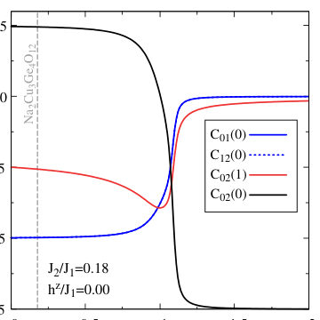
<figcaption class="paper-figure-caption"><b>Fig 4.</b> FIG. 4. Evolution of the spin–spin correlation functions at zero magnetic-field (hz/J1 = 0) as a function of the frustra- tion ratio J3/J1 for J2/J1 = 0.18 and periodic boundary con- ditions. The gray dashed line indicates the parameter range relevant to Na2Cu3Ge4O12.</figcaption>
</figure>
<figure class="paper-figure-card">
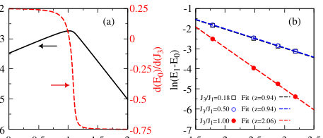
<figcaption class="paper-figure-caption"><b>Fig 5.</b> FIG. 6. (a) Ground-state energy per site E0/Lc (left axis), and its derivative (right axis), showing a smooth evolution across the parameter range for J2/J1 = 0.18, hz/J1 = 0.0, and Lc = 12 sites. (b) Log-log behavior of energy gap (E1 − E0) as a function of Lc for three different frustration ratios J3/J1 = 0.18, J3/J1 = 0.50 and J3/J1 = 1.00. The dashed lines represent the linear fit of the data.</figcaption>
</figure>
</div>

<p><strong>Summary.</strong> This work theoretically examines how competing interactions (frustration) destabilize and reorganize quantum spin chains modeled after $   ext{Na}<em 12>2   ext{Cu}_3   ext{Ge}_4   ext{O}</em>$. By using advanced mean-field and exact diagonalization techniques, the authors map out distinct magnetic phases, explaining the stability of magnetization plateaus through emergent doublon correlations. The findings offer a microscopic framework for understanding fractionalized excitations in these complex quantum magnets.</p>
<p><strong>Why it may be interesting.</strong> The detailed analysis of correlation functions and critical exponents ($z$, $c$) provides a deep theoretical understanding of how geometric frustration fundamentally alters the ground state structure, which is relevant for designing correlated electronic materials.</p>
<details>
<summary>Detailed structure</summary>
<p><strong>Main problem.</strong> The study investigates frustration-induced instabilities and the emergence of fractionalized excitations in trimerized quantum spin systems.</p>
<p><strong>Main result.</strong> Frustration drives a reorganization of spin correlations, leading to a crossover from a collective ferrimagnetic state to one characterized by doublon-like correlations, providing a microscopic explanation for magnetization plateaus.</p>
<p><strong>Method.</strong> The research employs a combination of the Cluster Mean-Field (CMF) approach and Lanczos exact diagonalization on finite clusters. Quantum information measures like fidelity susceptibility are used to characterize criticality.</p>
<p><strong>Model / system.</strong> The system is a spin-1/2 Heisenberg model defined on a trimerized quantum spin chain, motivated by the compound Na2Cu3Ge4O12. The Hamiltonian includes competing interactions J1, J2, and J3, alongside an external magnetic field.</p>
<p><strong>Key observables.</strong> Magnetization plateaus (especially 1/3), two-point spin-spin correlation functions, fidelity susceptibility ($\chi_F$), and von Neumann entanglement entropy ($S_{vN}$).</p>
<p><strong>Important parameters / regimes.</strong> The frustration ratio $J_3/J_1$ is the key tuning parameter, analyzed across weakly frustrated regimes up to strong frustration.</p>
<p><strong>Assumptions / limitations.</strong> The primary theoretical tool used is the Cluster Mean-Field approximation, which treats intercluster interactions via mean-field decoupling.</p>
<p><strong>Figures summary.</strong> Figures illustrate the evolution of correlation functions ($C_{ij}(r)$) and the magnetic phase diagram across different frustration regimes. $\chi_F$ peaks near a critical point $J_c 3/J_1 \approx 1.09$.</p>
<p><strong>Paper structure.</strong> The paper analyzes the system in distinct frustration regimes, using CMF to map the phase diagram and ED/finite-size scaling on finite clusters to characterize quantum criticality via energy gaps and entanglement entropy.</p>
</details>
<details>
<summary>Abstract</summary>
<p>We investigate frustration-induced instabilities in a trimerized quantum spin chain motivated by recent experimental findings for the compound Na$_2$Cu$_3$Ge$_4$O$_{12}$. Employing a cluster mean-field approach combined with Lanczos exact diagonalization, we analyze the ground-state and quantum-information properties of a Heisenberg model with competing interactions in a magnetic field. In the weakly frustrated regime, the system exhibits a robust $1/3$ magnetization plateau associated with a collective ferrimagnetic-like trimer state. Increasing the next-nearest-neighbor intratrimer coupling drives a pronounced reorganization of spin correlations, leading to a crossover toward a doublon-like correlation regime and providing a static ground-state picture consistent with the composite excitations observed dynamically in trimerized chains. The resulting low-energy behavior can be interpreted in terms of weakly interacting emergent spins, offering a microscopic explanation for the extended stability of the magnetization plateau. Furthermore, through finite-size scaling analyses of the energy gap, von Neumann entanglement entropy, and fidelity susceptibility, we characterize the zero-field criticality of the model. Ultimately, our results suggest that frustration gives rise to qualitatively distinct quantum states and provide a microscopic framework for understanding the emergence of fractionalized excitations in trimerized quantum spin systems.</p>
</details>
<p><sub><a href="#top">↑ back to top</a></sub></p>

<p><a id="paper-2606.12877"></a></p>
<h3 id="quantum-otto-engine-powered-by-an-anisotropic-heisenberg-xyz-model-under-independent-local-magnetic-fields"><a href="http://arxiv.org/abs/2606.12877v1">Quantum Otto engine powered by an anisotropic Heisenberg XYZ model under independent local magnetic fields</a></h3>
<p><strong>Authors:</strong> Meiru Li, Maimaitiyiming Tusun, Fang Zhao, Hasiyatihan Abudoula, Tongcheng Wei<br>
<strong>Type:</strong> theory · <strong>Category:</strong> statistical mechanics · <strong>PDF:</strong> <a href="https://arxiv.org/pdf/2606.12877v1">https://arxiv.org/pdf/2606.12877v1</a><br>
<strong>Analysis basis:</strong> full PDF text, analyzed in chunks
<strong>Topic relevance:</strong> 🔥 <code>entanglement &amp; information structure</code> <strong>4/5</strong> · <code>analog quantum simulation</code> <strong>2/5</strong> · <code>non-equilibrium dynamics</code> <strong>2/5</strong> · <code>correlated / nonlocal dissipation</code> <strong>1/5</strong> · <code>driven-dissipative phase transition</code> <strong>1/5</strong> · <code>exotic spin models in light-matter</code> <strong>1/5</strong> · <code>methods for driven-dissipative</code> <strong>1/5</strong> · <code>non-equilibrium universality</code> <strong>1/5</strong></p>
<div class="figure-strip-hint">↔ Scroll figures horizontally</div>
<div class="paper-figures-scroll">
<figure class="paper-figure-card">
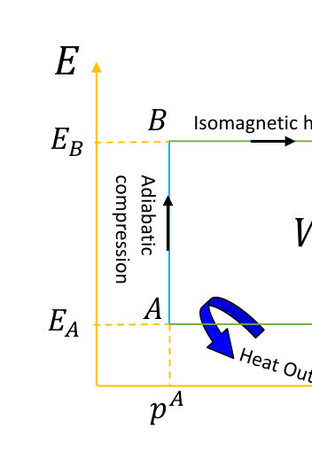
<figcaption class="paper-figure-caption"><b>Fig 1.</b> Figure 1: Sketch of the quantum Otto cycle.</figcaption>
</figure>
<figure class="paper-figure-card">
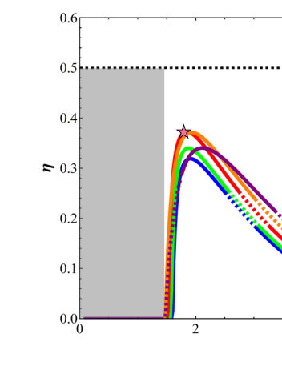
<figcaption class="paper-figure-caption"><b>Fig 2.</b> Figure 2: Efficiency η versus transverse coupling J for several values of the anisotropy ∆. Com- mon parameters: Jz = 1.0, Th = 2.0, Tc = 1.0, B1h = 3.0, B2h = 0.0, B1c = 0.8, B2c = 0.8. The black dashed line marks the Carnot limit ηCarnot = 0.5. Shaded gray regions indicate param- eter regimes where no net work can be extracted, i.e., where the heat engine does not operate in a valid engine mode. Dotted segments mark regions with level crossings, where normal heatengine operation is also forbidden.</figcaption>
</figure>
<figure class="paper-figure-card">
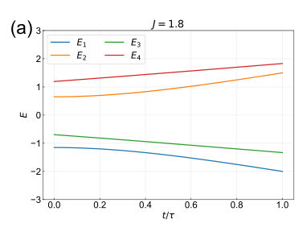
<figcaption class="paper-figure-caption"><b>Fig 3.</b> Figure 3: Energylevel evolution during the linear timedependent variation of the local magnetic fields, corresponding to the two starmarked points in Fig. 2. The solid lines from bottom to top at the initial time represent E1, E3, E2, and E4, respectively.</figcaption>
</figure>
<figure class="paper-figure-card">
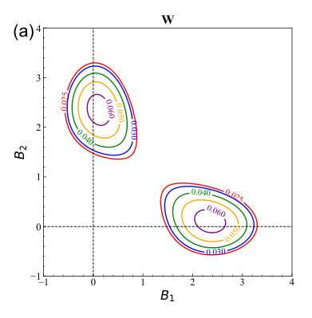
<figcaption class="paper-figure-caption"><b>Fig 4.</b> Figure 4: Contour plots of net work Wnet and efficiency η in the (B1h, B2h) plane for Jz = 0.5. Common parameters: ∆= 1.0, J = 2.0, Th = 2.0, Tc = 1.0, (B1c, B2c) = (0.8, 0.8). The black dashed lines indicate B1h = 0 or B2h = 0.</figcaption>
</figure>
<figure class="paper-figure-card">
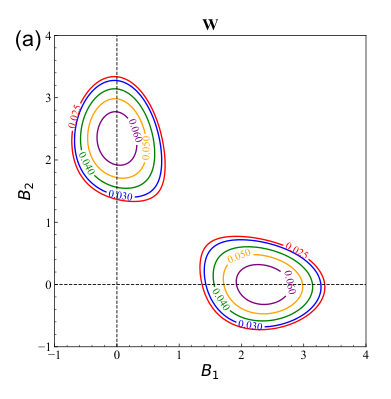
<figcaption class="paper-figure-caption"><b>Fig 5.</b> Figure 5: Same as Fig. 4 but for Jz = 1.0.</figcaption>
</figure>
</div>

<p><strong>Summary.</strong> The paper analyzes a quantum Otto engine powered by an anisotropic two-qubit Heisenberg XYZ model. It systematically maps out the relationship between coupling strengths, magnetic fields, and energy extraction efficiency. The key finding is that entanglement asymmetry acts as a measurable witness of underlying energy level restructuring responsible for enhancing work output.</p>
<p><strong>Why it may be interesting.</strong> This work provides detailed insights into how microscopic quantum correlations (entanglement) can be linked to macroscopic thermodynamic performance metrics like efficiency in engineered quantum systems.</p>
<details>
<summary>Detailed structure</summary>
<p><strong>Main problem.</strong> The study investigates how an anisotropic two-qubit Heisenberg XYZ model can power a quantum Otto heat engine under independent local magnetic fields.</p>
<p><strong>Main result.</strong> Engine efficiency is maximized by tuning the anisotropy parameter, and entanglement asymmetry between hot and cold strokes correlates strongly with performance enhancement. The work done is functionally partitioned among the qubits and their interaction term.</p>
<p><strong>Method.</strong> The authors systematically analyze the quantum Otto cycle using exact diagonalization of the Hamiltonian and calculating thermodynamic quantities via partition functions and local work decomposition.</p>
<p><strong>Model / system.</strong> The system is an anisotropic two-qubit Heisenberg XYZ model, whose dynamics are governed by a Hamiltonian incorporating coupling terms ($J, \Delta, J_z$) and independent local magnetic fields ($B_1, B_2$).</p>
<p><strong>Key observables.</strong> Net work output (W_net), efficiency ($\eta$), quantum entanglement (concurrence), and the local work contributions from each qubit and their interaction.</p>
<p><strong>Important parameters / regimes.</strong> Anisotropy parameter ($\Delta$), transverse coupling ($J$), longitudinal coupling ($J_z$), and the asymmetry of the local magnetic fields ($B_1, B_2$).</p>
<p><strong>Assumptions / limitations.</strong> The analysis relies on treating the cycle using an ideal adiabatic limit for work strokes and assuming specific field control protocols.</p>
<p><strong>Figures summary.</strong> Figures illustrate the four steps of the Otto cycle; one shows efficiency ($\eta$) vs. $J$ for various $\Delta$, mapping out optimal operating regimes and level crossing regions.</p>
<p><strong>Paper structure.</strong> The paper systematically analyzes the Hamiltonian, calculates thermodynamic quantities across the four strokes (adiabatic/isomagnetic), decomposes the work into local contributions ($w_1, w_2, w_{	ext{int}}$), and finally correlates efficiency enhancement with changes in quantum entanglement.</p>
</details>
<details>
<summary>Abstract</summary>
<p>We study a quantum Otto heat engine whose working substance is an anisotropic two-qubit Heisenberg XYZ model. Independent local magnetic fields are used to control each spin individually. The influence of the longitudinal coupling, anisotropy, transverse coupling, and local fields on the net work output and efficiency is systematically examined. Reducing the longitudinal coupling is found to markedly improve both the maximum work and the peak efficiency. The engine performance reaches an optimum at a particular value of the anisotropy parameter. A local work analysis clarifies how work is produced during the cycle. Because of the asymmetric local fields and the intrinsic spin-spin interaction, the two qubits play markedly different thermodynamic roles; the interaction term itself contributes crucially to the total work. We further analyze the variation of quantum entanglement, quantified by concurrence, along the cycle. The results indicate that a pronounced change in entanglement between the hot and cold isomagnetic strokes is closely correlated with the efficiency enhancement. This work offers new insight into the operating principles and control of quantum Otto heat engines.</p>
</details>
<p><sub><a href="#top">↑ back to top</a></sub></p>

<p><a id="paper-2606.12530"></a></p>
<h3 id="hidden-antiferromagnetism-persistent-valley-fluctuations-and-math289math-crossovers-in-triangular-lattice-m-point-moire-materials-via-determinantal-quantum-monte-carlo"><a href="http://arxiv.org/abs/2606.12530v1">Hidden antiferromagnetism, persistent valley fluctuations, and $U(6)$ crossovers in triangular-lattice M-point moiré materials via determinantal quantum Monte Carlo</a></h3>
<p><strong>Authors:</strong> Konstantinos Vasiliou, Dumitru Călugăru, Johannes S. Hofmann, S. A. Parameswaran<br>
<strong>Type:</strong> theory · <strong>Category:</strong> strongly correlated electrons · <strong>PDF:</strong> <a href="https://arxiv.org/pdf/2606.12530v1">https://arxiv.org/pdf/2606.12530v1</a><br>
<strong>Analysis basis:</strong> full PDF text, analyzed in chunks
<strong>Topic relevance:</strong> 🔥 <code>analog quantum simulation</code> <strong>4/5</strong> · <code>exotic spin models in light-matter</code> <strong>3/5</strong> · <code>Keldysh / 2PI / non-Gaussian methods</code> <strong>1/5</strong> · <code>Kondo &amp; dissipative impurity</code> <strong>1/5</strong> · <code>entanglement &amp; information structure</code> <strong>1/5</strong> · <code>methods for driven-dissipative</code> <strong>1/5</strong> · <code>non-equilibrium dynamics</code> <strong>1/5</strong></p>
<div class="figure-strip-hint">↔ Scroll figures horizontally</div>
<div class="paper-figures-scroll">
<figure class="paper-figure-card">
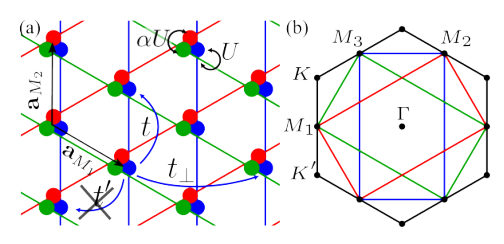
<figcaption class="paper-figure-caption"><b>Fig 1.</b> FIG. 1. (a) Each dot represents a spinful Wannier orbital, with colors denoting different valleys η. We set symmetry- forbidden or subdominant terms beyond t, t⊥to zero. (b) The reciprocal Wigner-Seitz cell of the triangular lattice (black) defines the moiré Brillouin zone (mBZ) but each valley expe- riences an effective rectangular BZ (colors).</figcaption>
</figure>
<figure class="paper-figure-card">
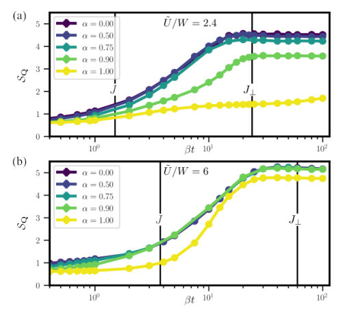
<figcaption class="paper-figure-caption"><b>Fig 2.</b> FIG. 2. The temperature dependence of the spin correla- tions at the ordering vector Q(η) for V = 0, t⊥= 0.25 and L = 12, for ˜U/W = 2.4 and ˜U/W = 6 (U/t = 6, 15 respec- tively). The vertical lines denote J = 4t2/U, J⊥= 4t2 ⊥/U. For α &gt; 0.90 in the top panel, the system remains in the ‘intermediate-coupling’ regime, whereas all other (U, α) pairs can be characterized as ‘strongly-coupled’.</figcaption>
</figure>
<figure class="paper-figure-card">
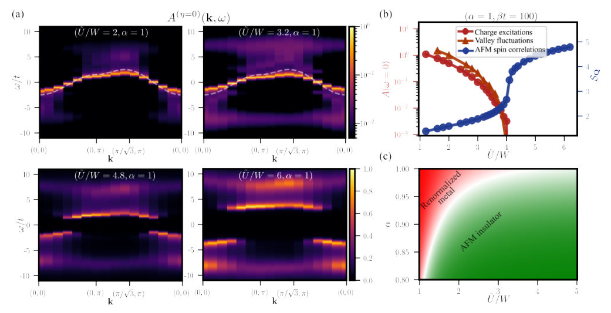
<figcaption class="paper-figure-caption"><b>Fig 3.</b> FIG. 3. (a) Evolution of the analytically continued spectral function A(η=0)(k, ω) in valley 0 and at T = 0.05t from U/t = 5 ( ˜U/W = 2) to U/t = 15 ( ˜U/W = 6). (b) AFM spin correlations (blue) and the local (BZ-integrated) ω = 0 charge and valley spectral weights (red) extracted from imaginary-time data at T = 0.01t. Note that AFM correlations rise concurrently with a spectral gap opening at U ≈10t. (c) In the qualitative low-T phase diagram, an insulator with long-range AFM order crosses over to a strongly-renormalized finite-T metal with only short-range AFM correlations, with the latter two features best captured via a U(6) local-moment picture (cf. Fig. 2). Throughout, we set t⊥=...</figcaption>
</figure>
<figure class="paper-figure-card">
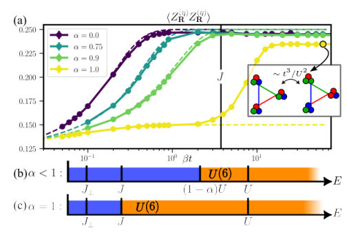
<figcaption class="paper-figure-caption"><b>Fig 4.</b> FIG. 4. (a) The square of the local moment as a func- tion of inverse temperature in the strong-coupling regime, at ˜U/W = 6. The dashed lines correspond to the atomic prob- lem and the inset displays higher-order ring-exchange pro- cesses reducing the ground state total moment for the U(6)- symmetric interactions. (b)&amp;(c) Show the energy hierarchy for U(6)-breaking and U(6)-symmetric interactions.</figcaption>
</figure>
</div>

<p><strong>Summary.</strong> This theoretical work explores the complex ground state physics of moiré materials using a Hubbard model incorporating valley degrees of freedom. By combining DQMC simulations and advanced spin-wave theory, the authors map out a phase diagram showing how tuning interaction symmetries drives crossovers between magnetically ordered insulators and correlated metallic states. The key finding is that persistent quantum fluctuations stabilize exotic intermediate regimes.</p>
<p><strong>Why it may be interesting.</strong> The detailed study of how quantum fluctuations (valley fluctuations) stabilize a metallic or fluctuating state over a simple ordered insulator is highly relevant for understanding emergent phenomena in strongly correlated systems, which shares conceptual links with many open quantum system models.</p>
<details>
<summary>Detailed structure</summary>
<p><strong>Main problem.</strong> The study investigates hidden antiferromagnetism, persistent valley fluctuations, and $U(6)$ crossovers in moiré materials. The goal is to understand the competition between local moment formation and itinerant behavior as interaction symmetries are tuned.</p>
<p><strong>Main result.</strong> The system exhibits an extended intermediate-coupling regime where low-energy charged quasiparticles are dressed by neutral valley fluctuations. Quantum fluctuations favor a stripe order over other classical ground states.</p>
<p><strong>Method.</strong> The research employs Determinantal Quantum Monte Carlo (DQMC) simulations, supplemented by advanced theoretical tools like perturbation theory, Random Phase Approximation (RPA), and Linear Spin-Wave Theory (LSWT).</p>
<p><strong>Model / system.</strong> The model is based on a Hubbard-type Hamiltonian describing electrons in the low-energy states of twisted two-dimensional atomic monolayers forming a triangular-lattice M-point moiré superlattice. The system is studied at half-filling ($
u=3$).</p>
<p><strong>Key observables.</strong> Momentum-resolved spin-spin correlations, imaginary-time Green's functions, valley fluctuation spectral weights, and local double occupancy.</p>
<p><strong>Important parameters / regimes.</strong> Interaction anisotropy parameter $\alpha$ (especially near $\alpha=1$), coupling strengths ($U/W$, $J'/J$), and temperature ($T 	o 0$).</p>
<p><strong>Assumptions / limitations.</strong> The DQMC simulations rely on the existence of a sign-free formulation due to particle-hole symmetry at half-filling. Theoretical analyses often involve approximations like LSWT or mean-field decoupling.</p>
<p><strong>Figures summary.</strong> Figures illustrate spin correlation temperature dependence, spectral function evolution showing quasiparticle behavior, and quantum zero-point energy calculations demonstrating the preference for stripe order over classical ground states.</p>
<p><strong>Paper structure.</strong> The paper progresses from defining the lattice model and symmetries to implementing DQMC simulations. It then analyzes different coupling regimes (weak, intermediate, strong) using various theoretical tools like RPA, perturbation theory, and spin-wave analysis to map out the phase diagram.</p>
</details>
<details>
<summary>Abstract</summary>
<p>A new moiré material platform was recently proposed based on twisting two-dimensional atomic monolayers whose low-energy states lie at the three M-points of the Brillouin Zone. Continuum and ab initio modeling suggest that electrons in the conduction bands of these materials realize three-valley Hubbard models with valley-selective, quasi-one-dimensional hopping. Remarkably, the onsite Hubbard repulsion is almost $U(6)$-symmetric without fine-tuning. Here, we show that this class of systems naturally admits sign-free determinantal Quantum Monte Carlo simulations at a filling of three electrons per moiré unit cell. We use these to explore the phase diagram for interactions of various strengths and $U(6)$-breaking anisotropies. We show that for near-isotropic interactions as relevant to, e.g., AA-stacked twisted SnSe$_2$, the system exhibits an extended intermediate-coupling regime in which local-moment formation and itinerancy compete, and the crossover to a putative low-temperature ordered state can be understood in terms of fluctuating $U(6)$ local moments. We argue that many of these features persist beyond the idealized sign-problem-free limit.</p>
</details>
<p><sub><a href="#top">↑ back to top</a></sub></p>

<p><a id="paper-2606.12685"></a></p>
<h3 id="multiple-topological-haldane-phases-for-symmetry-protected-quantum-information-processing"><a href="http://arxiv.org/abs/2606.12685v1">Multiple Topological Haldane Phases for Symmetry-Protected Quantum Information Processing</a></h3>
<p><strong>Authors:</strong> João Pedro Gama D'Elia, Irene D'Amico, Thereza Paiva<br>
<strong>Type:</strong> theory · <strong>Category:</strong> quantum information and computing · <strong>PDF:</strong> <a href="https://arxiv.org/pdf/2606.12685v1">https://arxiv.org/pdf/2606.12685v1</a><br>
<strong>Analysis basis:</strong> full PDF text, analyzed in chunks
<strong>Topic relevance:</strong> 🔥 <code>analog quantum simulation</code> <strong>4/5</strong> · <code>exotic spin models in light-matter</code> <strong>3/5</strong> · <code>entanglement &amp; information structure</code> <strong>2/5</strong> · <code>methods for driven-dissipative</code> <strong>1/5</strong> · <code>spintronics-quantum-optics interface</code> <strong>1/5</strong></p>
<div class="figure-strip-hint">↔ Scroll figures horizontally</div>
<div class="paper-figures-scroll">
<figure class="paper-figure-card">
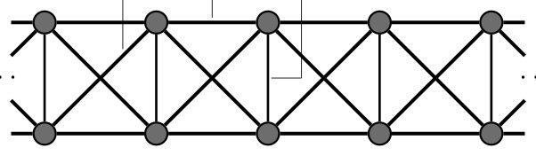
<figcaption class="paper-figure-caption"><b>Fig 1.</b> Fig. 1. | Ladder system. The two-leg Heisenberg ladder with diagonal exchange interaction. While the diagonal and leg exchange interactions are constant and equal, the rung exchange interaction J⊥r depends on the rung index r.</figcaption>
</figure>
<figure class="paper-figure-card">
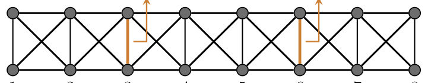
<figcaption class="paper-figure-caption"><b>Fig 2.</b> Fig. 2. | Haldane subsystems via a local rung singlet. Illustration of a ladder system with L = 8 and N = 2. The rung exchange term in rungs 3 and 6 are given by J⊥. The system gets partitioned in N + 1 = 3 subsystems, separated by the N rungs. As J⊥is enhanced, the system crosses a 1QPT, where each subsystem becomes effectively independent spin-1 chains separated by the rung-singlets at positions 3 and 6.</figcaption>
</figure>
<figure class="paper-figure-card">
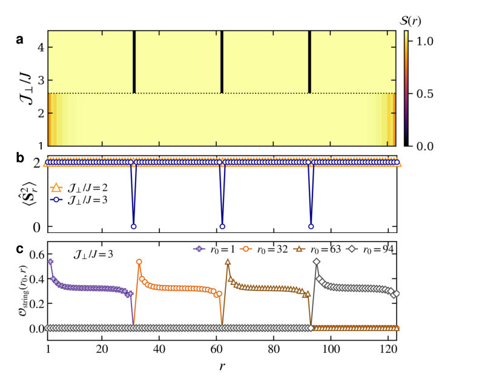
<figcaption class="paper-figure-caption"><b>Fig 3.</b> Fig. 3. | First-order transition to Haldane subsystems. a Bipartite entanglement entropy S(r) for L = 123 and as the rung couplings J⊥of rungs 31, 62, and 93 are increased (calculations done using DMRG). The entropy between rungs 31, 62, and 93 and the rest of the system vanishes beyond a critical value of J⊥, signaling that the ladder splits into four independent subsystems. b Expectation value ⟨ˆS2 r⟩showing the transition from a uniform spin-1 chain (J⊥/J = 2) to four spin-1 chains separated by spin-0 rungs (J⊥/J = 3). c The string-order correlation function, indicator of hidden antiferromagnetic order, as a function of the rung index. It is possible to see that, for J⊥&gt; J⊥c, the...</figcaption>
</figure>
<figure class="paper-figure-card">
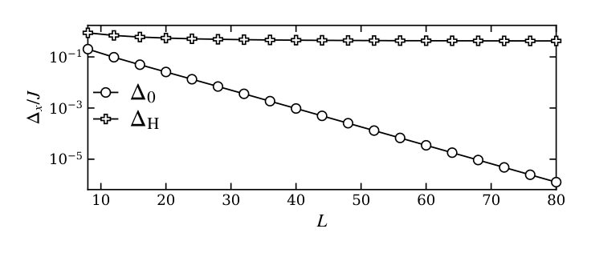
<figcaption class="paper-figure-caption"><b>Fig 4.</b> Fig. 4. | Energy gaps of the topological subspace. Size dependence of the Haldane gap ∆H and of the singlet–triplet splitting ∆0 obtained from DMRG. While ∆0 decreases exponentially with system size due to edge decoupling, the bulk Haldane gap remains nearly constant. Here L refers to the size of one of the Haldane subsystems.</figcaption>
</figure>
<figure class="paper-figure-card">
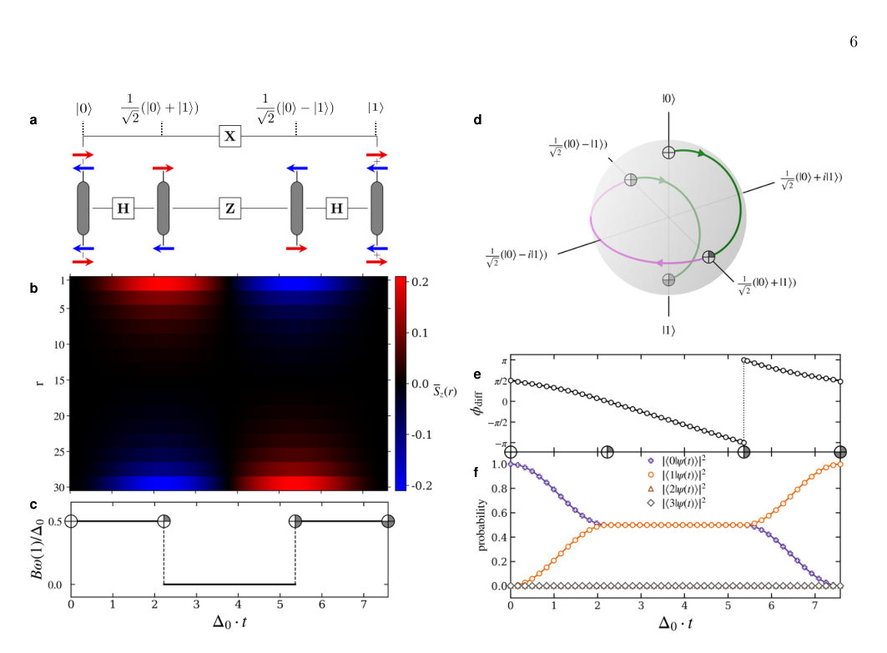
<figcaption class="paper-figure-caption"><b>Fig 5.</b> Fig. 5. | Single-qubit gate implemented using finite size splitting and local control. a Gate sequence realizing a Pauli-X operation via two Hadamard rotations and a Pauli-Z operation. b Time evolution of the edge magnetization profile during the protocol (TEBD) for a system with L = 30 rungs. The vertical axis corresponds to the rung index, displaying the sum magnetization given by equation 12. c Control sequence for the boundary magnetic field. d Trajectory of the Bloch vector in the logical subspace. The green curves correspond to B ̸= 0 intervals and the pink curve to B = 0. The path was built using the TEBD data of panels e and f. e Relative phase evolution between |0⟩and |1⟩. f...</figcaption>
</figure>
</div>

<p><strong>Summary.</strong> The paper proposes using a spin ladder exhibiting Haldane phases as a robust platform for quantum computing. By locally tuning the system's interactions, the authors create independent topological subsystems capable of hosting qubits. This architecture allows for the implementation of both single-qubit rotations and entangling two-qubit gates necessary for universal computation.</p>
<p><strong>Why it may be interesting.</strong> This work provides a concrete realization pathway for topological quantum computation, moving beyond abstract theory by mapping required gate operations onto tunable parameters (like local fields and couplings) within a solid-state spin model.</p>
<details>
<summary>Detailed structure</summary>
<p><strong>Main problem.</strong> The primary goal is to demonstrate a scalable, physical architecture for universal quantum computation using symmetry-protected topological (SPT) phases.</p>
<p><strong>Main result.</strong> The authors show that by engineering local couplings in a spin ladder system, they can partition it into independent Haldane subsystems, allowing for controlled single-qubit rotations and entangling two-qubit gates necessary for universal computation.</p>
<p><strong>Method.</strong> The work relies on theoretical modeling using effective Hamiltonians derived from the low-energy projection of the full many-body Hamiltonian. Gate performance is quantified by calculating gate fidelity and leakage probability through time evolution simulations (TEBD/TDVP).</p>
<p><strong>Model / system.</strong> The system is a spin-1/2 ladder composed of multiple coupled Haldane chains, where qubits are encoded in the two topological states of the $S^z=0$ sector. The Hamiltonian involves Heisenberg interactions and tunable rung couplings ($J_{\perp}$).</p>
<p><strong>Key observables.</strong> Gate fidelity ($F_{gate}$), leakage probability ($\mathcal{P}_{leak}$), entanglement entropy, and the energy splitting ($\Delta_0$) between topological ground states.</p>
<p><strong>Important parameters / regimes.</strong> Local magnetic field strength ($B$), interaction coupling strengths ($g_2/J$), and the ratio of rung couplings to chain interactions ($J_{\perp}/J$).</p>
<p><strong>Assumptions / limitations.</strong> The protocol deliberately utilizes finite-size effects (residual coupling) as a controllable resource rather than an error source, allowing for coherent control axes.</p>
<p><strong>Figures summary.</strong> Figures illustrate the ladder structure and the process of partitioning into independent subsystems. Other figures show Bloch vector trajectories confirming single-qubit gate operations and entanglement dynamics confirming Bell state formation.</p>
<p><strong>Paper structure.</strong> The paper progresses by first establishing the physical model (ladder system) and demonstrating how local tuning induces quantum phase transitions to create isolated Haldane subsystems. It then details the implementation of single-qubit gates using finite-size gaps, followed by introducing inter-subsystem interactions to achieve universal two-qubit entangling gates.</p>
</details>
<details>
<summary>Abstract</summary>
<p>Symmetry-protected topological phases have attracted significant interest at the fundamental level and as a potential platform for quantum information processing, owing to their protected edge states and resilience to perturbations. Applying these features for practical and efficient quantum computation is highly desirable, but remains an open challenge. Here, we demonstrate the partitioning into multiple independent Haldane phase subsystems of a single spin-1/2 ladder system and propose this as a scalable architecture for gate-based quantum computation, which takes advantage of the symmetry-protected topological order. We encode qubits in the two topological states of the $S^{z}=0$ sector of each subsystem. Finite-size effects, typically viewed as detrimental, instead provide a controllable energy splitting that enables single-qubit rotations using only local magnetic fields. An Ising-type interaction between neighboring subsystem edges generates entangling gates, enabling universal quantum computation driven by two control parameters that are easily accessible experimentally. Our results demonstrate how symmetry-protected topological phases can be directly harnessed for circuit-model quantum computation in realistic systems.</p>
</details>
<p><sub><a href="#top">↑ back to top</a></sub></p>

<p><a id="paper-2606.12906"></a></p>
<h3 id="global-control-with-the-tavis-cummings-interaction"><a href="http://arxiv.org/abs/2606.12906v1">Global Control with the Tavis-Cummings Interaction</a></h3>
<p><strong>Authors:</strong> Plato Deliyannis, Iman Marvian<br>
<strong>Type:</strong> theory · <strong>Category:</strong> quantum information and computing · <strong>PDF:</strong> <a href="https://arxiv.org/pdf/2606.12906v1">https://arxiv.org/pdf/2606.12906v1</a><br>
<strong>Analysis basis:</strong> full PDF text, analyzed in chunks
<strong>Topic relevance:</strong> 🔥 <code>Tavis-Cummings &amp; cavity-many-emitter</code> <strong>4/5</strong> · <code>Keldysh / 2PI / non-Gaussian methods</code> <strong>1/5</strong> · <code>analog quantum simulation</code> <strong>1/5</strong> · <code>correlated cavity matter</code> <strong>1/5</strong> · <code>driven-dissipative phase transition</code> <strong>1/5</strong> · <code>entanglement &amp; information structure</code> <strong>1/5</strong> · <code>methods for driven-dissipative</code> <strong>1/5</strong></p>
<div class="figure-strip-hint">↔ Scroll figures horizontally</div>
<div class="paper-figures-scroll">
<figure class="paper-figure-card">
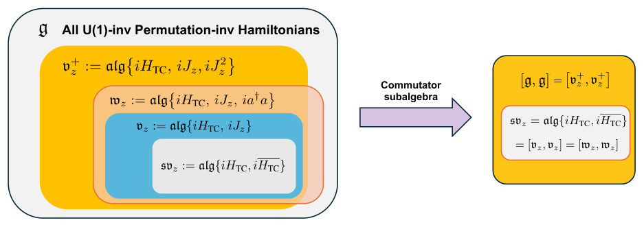
<figcaption class="paper-figure-caption"><b>Fig 1.</b> FIG. 1. First main result (Theorem 1 and Theorem 7). Schematic relationship between different Lie algebras generated by various subsets of HTC ∝(J+a + J−a†), HTC ∝i(J+a −J−a†), Jz, J2 z , and a†a. All these algebras are subalgebras of g, the Lie algebra of all PI, U(1)-invariant Hamiltonians. Although the algebras svz, vz, wz, v+ z , and g are all distinct, after removing their centers, i.e., after passing to their commutator subalgebras, they reduce to only two possibilities: [g, g] = [v+ z , v+ z ] and svz = [vz, vz] = [wz, wz]. The latter algebra is restricted by the accidental symmetry of HTC, which, to the best of our knowledge, has not been identified before. The centers removed by...</figcaption>
</figure>
<figure class="paper-figure-card">
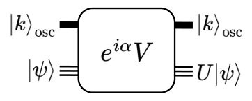
<figcaption class="paper-figure-caption"><b>Fig 2.</b> FIG. 2. Second main result (Theorem 8). The goal is to implement a unitary U on the qubits by coupling them to a bosonic mode initial- ized in the eigenstate |k⟩of its intrinsic Hamiltonian a†a, with eigen- value k. After the operation, the bosonic mode returns to the same pure state and hence remains unentangled with the qubits. This is achieved by implementing a unitary V using the Hamiltonians HTC and Jz. The phase eiα denotes the freedom to choose an overall global phase; see Eq. (142). Theorem 8 determines which unitary transformations U can be realized in this way.</figcaption>
</figure>
<figure class="paper-figure-card">
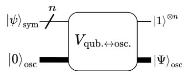
<figcaption class="paper-figure-caption"><b>Fig 3.</b> FIG. 3. Qubit-Oscillator SWAP unitary. See Eq. (96).</figcaption>
</figure>
<figure class="paper-figure-card">
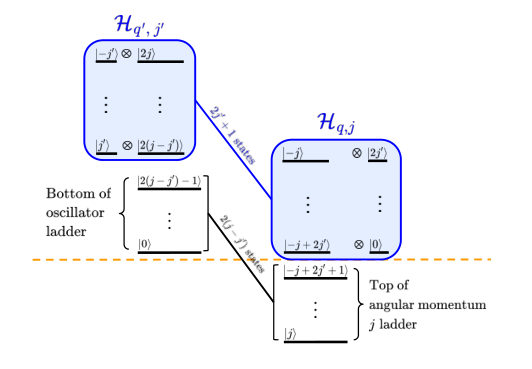
<figcaption class="paper-figure-caption"><b>Fig 4.</b> FIG. 4. General accidental symmetry pairs: The matrix elements of HTC are identical in the two illustrated sectors, provided that (q, q′) and (j, j′) satisfy Eq. (118). Note that in general, these sec- tors appear with nontrivial multiplicities within (C2)⊗n ⊗L2(R). Figure from [35].</figcaption>
</figure>
<figure class="paper-figure-card">

<figcaption class="paper-figure-caption"><b>Fig 5.</b> FIG. 5. Sketch of the proof of Lemma 10. Let F be a PI, U(1)-invariant operator supported only on the subspace spanned by |k⟩and |k + 1⟩, shown in the orange box. Now consider a pair of sectors Hq,j and Hq′,j′ that are related by the accidental symmetry. This symmetry maps the projection of F onto Hq,j to an operator acting on Hq′,j′, and vice versa; these symmetry-transformed operators are shown in purple. The key point is that these symmetry-transformed operators have no support on the subspace spanned by |k⟩and |k + 1⟩. Hence, if we form an augmented operator eF by adding the corresponding symmetry-transformed components to F, then eF agrees with F when restricted to the subspace spanned...</figcaption>
</figure>
</div>

<p><strong>Summary.</strong> The paper rigorously investigates the controllability of qubits coupled via a Tavis-Cummings interaction to a bosonic mode. It demonstrates that while initial controls are limited by an 'accidental' symmetry, introducing a secondary global field ($J_z^2$) breaks this constraint, enabling near-universal control over the system's unitary operations.</p>
<p><strong>Why it may be interesting.</strong> This work provides rigorous mathematical tools for determining the fundamental limits of quantum control in complex, interacting many-body systems, which is crucial for designing fault-tolerant quantum computation protocols.</p>
<details>
<summary>Detailed structure</summary>
<p><strong>Main problem.</strong> The core problem is characterizing the group of unitaries implementable on a joint qubit-bosonic system using global control fields derived from the Tavis-Cummings interaction.</p>
<p><strong>Main result.</strong> The realizable unitary group is restricted by an 'accidental' symmetry when only the TC interaction and $J_z$ are used, but adding $J_z^2$ breaks this symmetry, achieving semi-universality for implementing arbitrary unitaries respecting key symmetries.</p>
<p><strong>Method.</strong> The analysis relies heavily on Lie algebra theory to characterize the generated groups of unitaries by analyzing commutator subalgebras $[\mathfrak{g}, \mathfrak{g}]$ and comparing them to the full symmetry group $ ext{VU}(1)  imes    ext{Sn}$.</p>
<p><strong>Model / system.</strong> The system consists of $n$ qubits identically coupled via the Tavis-Cummings (TC) interaction to a single bosonic mode (harmonic oscillator). Control is applied globally using $J_z$ and potentially $J_z^2$.</p>
<p><strong>Key observables.</strong> The group of realizable unitaries ($V_z$), the structure of the Lie algebra ($\mathfrak{v}_z, \mathfrak{w}_z$), and the dimension/inclusion relationships between commutator subalgebras.</p>
<p><strong>Important parameters / regimes.</strong> Number of qubits ($n$), coupling strengths ($g_{TC}$), and the presence/absence of additional symmetry-breaking terms like $J_z^2$.</p>
<p><strong>Assumptions / limitations.</strong> The analysis often assumes that the bosonic mode acts as an ancillary system initialized in a fixed energy eigenstate, returning to it at the end.</p>
<p><strong>Figures summary.</strong> Figures illustrate schematic relationships between Lie algebras generated by combinations of Hamiltonians and show how commutator subalgebras reduce or expand based on added terms.</p>
<p><strong>Paper structure.</strong> The paper progresses from characterizing the initial restricted group $V_z$ using $\{	ext{iHTC}, 	ext{iJz}\}$, to showing that adding $  ext{iJ}_2^z$ breaks an accidental symmetry, leading to semi-universality. Later sections delve into detailed Lie algebra decompositions and structural proofs.</p>
</details>
<details>
<summary>Abstract</summary>
<p>We study the controllability of a system of qubits under global control, where control pulses act identically on all qubits. Specifically, we consider a collection of qubits identically coupled to a single bosonic mode, or harmonic oscillator, via the Jaynes-Cummings interaction. This collective coupling, known as the Tavis-Cummings (TC) interaction, has been realized in several quantum computing platforms, including superconducting and atomic qubit systems. Although the qubits do not interact directly with one another, they can become entangled through their common coupling to the bosonic mode. We characterize the group of unitaries that can be implemented on the joint Hilbert space of the qubits and bosonic mode using the TC interaction together with a global $z$ field $J_z$, corresponding to identical z rotations on all qubits. We show that for n&gt;2 qubits the set of realizable unitaries is restricted by an "accidental" symmetry of the TC Hamiltonian, distinct from its "standard" U(1) and permutational symmetries. On the other hand, we find that the Hamiltonian $J_z^2$ breaks this accidental symmetry and, together with the TC interaction and $J_z$, achieves semi-universality: it allows the implementation of arbitrary unitaries that respect permutational and U(1) symmetry, up to certain constraints on the center of the group. In a companion paper, we further analyze this remarkable accidental symmetry and show that it can be understood through Schwinger's bosonic model of angular momentum.</p>
</details>
<p><sub><a href="#top">↑ back to top</a></sub></p>

<p><a id="paper-2606.12512"></a></p>
<h3 id="spin-correlations-low-energy-scales-and-anisotropy-scaling-in-kagome-frustrated-magnets"><a href="http://arxiv.org/abs/2606.12512v1">Spin correlations, low-energy scales, and anisotropy scaling in kagome frustrated magnets</a></h3>
<p><strong>Authors:</strong> Phillip Popp, Stephan Rosenkranz, Arthur P. Ramirez, Sergey Syzranov<br>
<strong>Type:</strong> theory · <strong>Category:</strong> strongly correlated electrons · <strong>PDF:</strong> <a href="https://arxiv.org/pdf/2606.12512v1">https://arxiv.org/pdf/2606.12512v1</a><br>
<strong>Analysis basis:</strong> full PDF text, analyzed in chunks
<strong>Topic relevance:</strong> 🔥 <code>analog quantum simulation</code> <strong>4/5</strong> · <code>exotic spin models in light-matter</code> <strong>3/5</strong> · <code>spintronics-quantum-optics interface</code> <strong>1/5</strong></p>
<div class="figure-strip-hint">↔ Scroll figures horizontally</div>
<div class="paper-figures-scroll">
<figure class="paper-figure-card">

<figcaption class="paper-figure-caption"><b>Fig 1.</b> FIG. 1. (a) The transverse dynamical spin structure factor ˜S(ω, T) for various ratios α of the transverse to longitudinal exchange couplings and temperatures. Inset shows the structure factor at higher frequency for α = 0.05. Dashed black (lime) lines indicate the position of ω1(2)(α). (b) Dependence of the three energy scales T ∗, ω1, and ω2 on α (cf. panel c). Open symbols denote fits to ω1(2)(α) = A1(2)T ∗(α). (c) Heat capacity per spin of 24-site XXZ kagome clusters at the indicated values of α. The position of the low-temperature peak is denoted T ∗(α).</figcaption>
</figure>
<figure class="paper-figure-card">

<figcaption class="paper-figure-caption"><b>Fig 2.</b> FIG. 2. Three possible energies of flipping a single spin in a ground state of the kagome-lattice Ising model. Filled (open) circles represent spin-up (down) states.</figcaption>
</figure>
<figure class="paper-figure-card">

<figcaption class="paper-figure-caption"><b>Fig 3.</b> FIG. 3. The dynamical spin structure factor ˜S(ω, T = J/13) in the isotropic Heisenberg model (α = 1), in the three lowest- magnetization transition channels. Dashed black (green) line indicates the position of ω1(2).</figcaption>
</figure>
<figure class="paper-figure-card">

<figcaption class="paper-figure-caption"><b>Fig 4.</b> FIG. 5. Temperature dependence of the areas R</figcaption>
</figure>
<figure class="paper-figure-card">

<figcaption class="paper-figure-caption"><b>Fig 5.</b> FIG. 4. Low-energy |Mz| = 0 and |Mz| = 1 densities of states for an α = 1 cluster. Dashed lines indicate the positions of peaks that are relevant for the DSSF; arrows indicate the associated transition frequencies.</figcaption>
</figure>
</div>

<p><strong>Summary.</strong> The paper analyzes the magnetic excitations in kagome antiferromagnets using the XXZ model and numerical simulations. By tracking spectral features across varying anisotropies, the authors establish that low-energy peaks scale universally with a characteristic energy scale $T^*$. This provides a sharp spectroscopic criterion to distinguish between different types of quantum magnetic excitations observed experimentally.</p>
<p><strong>Why it may be interesting.</strong> This work provides a concrete, quantitative method (the scaling law $\omega \propto T^*$) to interpret complex experimental signatures in frustrated magnets, bridging advanced quantum simulation techniques with measurable physical observables like inelastic neutron scattering spectra.</p>
<details>
<summary>Detailed structure</summary>
<p><strong>Main problem.</strong> The central problem is distinguishing between fractionalized excitations (spinons) and magnon excitations when interpreting broad spectral features observed in neutron scattering experiments on quantum magnetic materials.</p>
<p><strong>Main result.</strong> The low-energy spin spectral function on the kagome lattice exhibits two robust, momentum-independent peaks ($\omega_1 \approx 3.4 T^*$ and $\omega_2 \approx 6.3 T^*$), suggesting these features arise from single-magnon scattering rather than a continuum of fractionalized excitations.</p>
<p><strong>Method.</strong> The authors use adiabatic continuity by tuning the anisotropy parameter ($\alpha$) in the XXZ Heisenberg model on geometrically frustrated lattices, simulating the dynamical spin structure factor using advanced numerical techniques like LTLM.</p>
<p><strong>Model / system.</strong> The system is the $S=1/2$ antiferromagnet on the kagome lattice, modeled by the anisotropic XXZ Heisenberg Hamiltonian. The analysis focuses on how spectral features evolve as a function of anisotropy and temperature.</p>
<p><strong>Key observables.</strong> Dynamical spin structure factor ($ ilde{S}(\omega, T)$), low-energy excitation frequencies ($\omega_1, \omega_2$), and the 'hidden energy scale' ($T^*$) derived from heat capacity measurements.</p>
<p><strong>Important parameters / regimes.</strong> Anisotropy parameter $\alpha$, temperature $T$, and the characteristic energy scale $T^*$ (related to spin-glass freezing).</p>
<p><strong>Assumptions / limitations.</strong> The low-energy excitations are assumed to be well-described by single-magnon transitions between specific magnetization bands ($|M_z|=0 	o 1$).</p>
<p><strong>Figures summary.</strong> Figures illustrate the temperature and anisotropy dependence of $  ilde{S}(\omega, T)$, showing the robust scaling of peak energies ($\omega_1, \omega_2$) relative to $T^*$, alongside heat capacity data confirming $T^*$.</p>
<p><strong>Paper structure.</strong> The paper develops a theoretical framework using adiabatic continuity on the XXZ model. It calculates $    ilde{S}(\omega, T)$ and demonstrates that low-energy spectral features scale universally with the characteristic temperature $T^*$, providing a spectroscopic criterion for interpreting neutron scattering data.</p>
</details>
<details>
<summary>Abstract</summary>
<p>Neutron scattering is central to identifying quantum states of magnetic materials. In the search for quantum spin liquids, broad spectral features of inelastic spectra have been cited as evidence for spinon excitations, but can also arise from magnon excitations excitations in the presence of quenched disorder and strong magnon interactions. We develop a new approach to this problem, based on the adiabatic continuity in the $XXZ$ Heisenberg model on geometrically frustrating (GF) lattices as a function of the model's anisotropy. Using this approach, we identify universal features and energies of finite-temperature spin correlators. Focusing on the kagome lattice, we show that the low-energy spin spectral function contains robust, momentum-independent peaks with frequencies: $ω_1 \approx 3.4 T^*$ and $ω_2 \approx 6.3 T^*$, where the ``hidden energy scale'' $T^*$ is the characteristic scale of a low-temperature peak in the heat capacity, at which many GF magnets also display spin-glass freezing. We show that the spectral features at low energies $ω\lesssim T^*$ arise from single-magnon scattering and identify the magnetizations of the respective excitations. We explore the evolution of the spectral features with temperature and discuss extensions to other GF lattices. Our results provide a sharp spectroscopic criterion for interpreting neutron scattering in kagome and other GF quantum magnets.</p>
</details>
<p><sub><a href="#top">↑ back to top</a></sub></p>

<p><a id="paper-2606.12761"></a></p>
<h3 id="instabilities-in-a-non-kam-system-via-information-scrambling-a-note"><a href="http://arxiv.org/abs/2606.12761v1">Instabilities in a Non-KAM System via Information Scrambling: A Note</a></h3>
<p><strong>Authors:</strong> Naga Dileep Varikuti<br>
<strong>Type:</strong> theory · <strong>Category:</strong> other · <strong>PDF:</strong> <a href="https://arxiv.org/pdf/2606.12761v1">https://arxiv.org/pdf/2606.12761v1</a><br>
<strong>Analysis basis:</strong> full PDF text, analyzed in chunks
<strong>Topic relevance:</strong> 🔥 <code>entanglement &amp; information structure</code> <strong>4/5</strong> · <code>non-equilibrium dynamics</code> <strong>2/5</strong> · <code>non-equilibrium universality</code> <strong>1/5</strong></p>
<div class="figure-strip-hint">↔ Scroll figures horizontally</div>
<div class="paper-figures-scroll">
<figure class="paper-figure-card">

<figcaption class="paper-figure-caption"><b>Fig 1.</b> FIG. 1. The figure depicts representative classical trajectories of the KHO near the resonance condition R = 4, obtained from three dif- ferent initial conditions and evolved for 104 time steps. Throughout, the parameters are fixed at K = 1 and τ = 1. At exact resonance, the phase space is organized into three distinct structures: a stochastic web spanning a large portion of phase space, period-four stability is- lands, and a central period-one regular island surrounding the origin. The chosen initial conditions are selected from each of these regions. As R is varied from 3.9 toward 4, following the sequence shown in panels (a)–(d), the trajectories undergo progressive deformation and...</figcaption>
</figure>
<figure class="paper-figure-card">

<figcaption class="paper-figure-caption"><b>Fig 2.</b> FIG. 2. The OTOCs are sensitive to the changes as the system tran- sitions from KAM to the non-KAM regime, which is demonstrated for R = 4 and R = 6. (a). The plots of OTOC for the parame- ter values R = 3.9, 4, and 4.1 are drawn. The values R = 3.9 and R = 4.1 correspond to the rational numbers 39/10 and 41/10, re- spectively. For rational R = p/q (with p and q coprime), the relevant arithmetic structure is governed by the numerator p. Consequently, the corresponding lower bounds on the linear-growth segment are determined by ϕ(39) and ϕ(41). The larger value of ϕ(41), a con- sequence of 41 being prime, accounts for the noticeably extended linear-growth regime observed for R = 4.1. (b)....</figcaption>
</figure>
</div>

<p><strong>Summary.</strong> This paper analyzes information scrambling in the quantized Kicked Harmonic Oscillator, a non-KAM system. Using OTOCs, the authors show that resonances fundamentally alter operator growth, leading to predictable quadratic scaling dictated by number theory (the Euler totient function). This highlights how arithmetic properties can control quantum dynamics even when conventional chaos indicators are weak.</p>
<p><strong>Why it may be interesting.</strong> This work connects concepts from classical dynamical systems (KAM theory, resonance) with modern quantum diagnostics (OTOCs), providing a deep mathematical structure ($\phi(R)$) to understand how quantum chaos manifests in periodically driven systems.</p>
<details>
<summary>Detailed structure</summary>
<p><strong>Main problem.</strong> The study investigates operator growth and information scrambling dynamics in quantized systems that violate the Kolmogorov-Arnold-Moser (KAM) theorem, focusing on the role of resonances.</p>
<p><strong>Main result.</strong> Resonant structures significantly influence quantum information spreading, causing OTOCs to exhibit a quadratic-in-time growth at resonance compared to linear growth away from it. This behavior is governed by number-theoretic functions like the Euler totient function.</p>
<p><strong>Method.</strong> The analysis employs Out-of-Time-Ordered Correlators (OTOCs) and utilizes perturbative expansions in the weak coupling limit, deriving closed-form expressions for these correlators.</p>
<p><strong>Model / system.</strong> The primary model is the Kicked Harmonic Oscillator (KHO), described by a Hamiltonian involving periodic delta-kicks. The system is analyzed using bosonic ladder operators ($\hat{a}, \hat{a}^\dagger$).</p>
<p><strong>Key observables.</strong> Out-of-Time-Ordered Correlators (OTOCs) and the averaged squared commutator function, $C\hat{a}\hat{a}^\dagger(t)$.</p>
<p><strong>Important parameters / regimes.</strong> The resonance ratio $R$ (where $\omega R = 2\pi/	au$), the perturbation strength $K$, and the time scale relative to the Euler totient function $\phi(R)$.</p>
<p><strong>Assumptions / limitations.</strong> The analysis is restricted to the weak perturbative regime ($K \ll 1$) and relies on simplifying assumptions regarding the time evolution related to roots of unity.</p>
<p><strong>Figures summary.</strong> Figures illustrate classical trajectories near resonance, showing stochastic webs, and plot OTOCs for specific rational ratios (e.g., R=4, R=6), demonstrating growth governed by $\phi(R)$.</p>
<p><strong>Paper structure.</strong> The paper first establishes the physical context of non-KAM systems using KHO and OTOCs. It then develops analytical techniques to calculate the time evolution of the commutator function in the weak coupling limit. Finally, it derives explicit forms showing the number-theoretic control exerted by resonances on information scrambling.</p>
</details>
<details>
<summary>Abstract</summary>
<p>We study operator growth in quantized non-KAM systems using out-of-time-ordered correlators (OTOCs), focusing on the kicked harmonic oscillator as a representative example. Since the classical harmonic oscillator is degenerate, the dynamics fall outside the usual Kolmogorov-Arnold-Moser (KAM) framework, and resonances play a central role in shaping the phase space. We examine the system near resonances, where the ratio between the oscillator and driving frequencies takes integer values. Even though the classical Lyapunov exponent remains small at these points, and hence no conventional chaos, the phase space still undergoes strong structural changes. The OTOCs are particularly sensitive to these resonances, with a quadratic-in-time growth at resonance compared to linear growth away from it. Within a perturbative treatment, we derive closed-form expressions for the OTOCs and uncover a number-theoretic structure emerging in the behavior of OTOCs, governed by the Euler totient function of the frequency ratio. Overall, the results we present in this short note imply that resonant structures can play an important role in controlling information spreading.</p>
</details>
<p><sub><a href="#top">↑ back to top</a></sub></p>

<p><a id="paper-2606.13263"></a></p>
<h3 id="phase-diagram-of-the-kitaev-heisenberg-math357math-model-classical-and-quantum-magnetism-frustration-and-subdominant-interactions"><a href="http://arxiv.org/abs/2606.13263v1">Phase diagram of the Kitaev-Heisenberg-$Γ$ model: Classical and quantum magnetism, frustration, and subdominant interactions</a></h3>
<p><strong>Authors:</strong> Kiyu Fukui, Yukitoshi Motome<br>
<strong>Type:</strong> theory · <strong>Category:</strong> strongly correlated electrons · <strong>PDF:</strong> <a href="https://arxiv.org/pdf/2606.13263v1">https://arxiv.org/pdf/2606.13263v1</a><br>
<strong>Analysis basis:</strong> full PDF text, analyzed in chunks
<strong>Topic relevance:</strong> 🔥 <code>analog quantum simulation</code> <strong>4/5</strong> · <code>exotic spin models in light-matter</code> <strong>3/5</strong></p>
<div class="figure-strip-hint">↔ Scroll figures horizontally</div>
<div class="paper-figures-scroll">
<figure class="paper-figure-card">

<figcaption class="paper-figure-caption"><b>Fig 1.</b> FIG. 1. Ground-state phase diagrams of the Kitaev-Heisenberg-Γ model in Eq. (1), parametrized by polar angle θ and azimuthal angle ϕ as defined in Eq. (2), for (a) classical spins for Γ ≥0, (b) quantum spins for Γ ≥0, and (c) quantum spins for Γ ≤0. In (a), (J, K, Γ) can be transformed to (−J, −K, −Γ) by a site-dependent time-reversal, and thus only the region with Γ ≥0 is shown. Calculations are carried out at 314620 parameter points. The region enclosed by the red dashed line indicates where the Luttinger-Tisza method loses its validity. The hatched regions indicate where incommensurate magnetic order is suggested. In (b) and (c), the black ticks on the outer circles indicate the phase...</figcaption>
</figure>
<figure class="paper-figure-card">

<figcaption class="paper-figure-caption"><b>Fig 2.</b> FIG. 2. Enlarged view of the lower quadrant of Fig. 1(a). The nota- tions are common to those in Fig. 1(a).</figcaption>
</figure>
<figure class="paper-figure-card">

<figcaption class="paper-figure-caption"><b>Fig 3.</b> Figure 1(a) shows the phase diagram in the classical case obtained from our numerical minimization. As noted in Sec. II A, for classical spins, it is sufficient to determine the phase diagram only for Γ ≥0. We obtain dominant phases, FM, N´eel AFM, zigzag, stripy, and vortex (also called 120◦), in agreement with previous studies [94, 95]. However, in the regions where the Luttinger-Tisza method is no longer valid [enclosed by the red dashed line in Fig. 1(a)], we identify highly competitive and complicated phase structures that are remarkably different from those reported in the previous stud- ies. To discuss this region in detail, Fig. 2 shows an enlarged view of the lower quadrant (5/4...</figcaption>
</figure>
<figure class="paper-figure-card">

<figcaption class="paper-figure-caption"><b>Fig 4.</b> FIG. 3. (a) Second-order derivative, (b) absolute value of the total scalar spin chirality χtot, and (c) system size dependence of the en- ergy per site ε, calculated from the optimized spin configurations. As in Fig. 2, only the lower quadrant of the phase diagram is shown.</figcaption>
</figure>
<figure class="paper-figure-card">

<figcaption class="paper-figure-caption"><b>Fig 5.</b> FIG. 4. Typical data of phases (a) 6, (b) 6′, (c) 8, (d) 8′, and (e) 24. The left panels show the optimized spin configurations. The colors of the arrows encode the magnitude of the out-of-plane component: [111] and [¯1¯1¯1] directions are shown in red and blue, respectively. Gray represents the in-plane component. The color code and spin axes are shown in (a). Orange dotted lines indicate the magnetic unit cells. The right panels show q dependences of S(q)/max[S(q)] in logarithmic scale. The color code is shown in (a). The inner white dotted and outer white solid lines represent the first Brillouin zone and the enlarged zone including up to the third one, respectively.</figcaption>
</figure>
</div>

<p><strong>Summary.</strong> This paper comprehensively maps the ground-state phase diagram of the Kitaev-Heisenberg-$\Gamma$ model, crucial for understanding real candidate materials. By comparing classical and quantum treatments, the authors reveal a complex interplay between magnetic interactions, showing that quantum effects significantly reduce the number of competing ordered states found classically. The results provide a vital guide for both interpreting experimental data and designing new spin liquid materials.</p>
<p><strong>Why it may be interesting.</strong> The explicit comparison between classical and quantum predictions regarding magnetic ordering is highly relevant as it elucidates how quantum fluctuations stabilize or suppress competing ordered phases in strongly correlated magnets.</p>
<details>
<summary>Detailed structure</summary>
<p><strong>Main problem.</strong> The study aims to clarify the complex ground-state phase diagram of the Kitaev-Heisenberg-$\Gamma$ model, specifically addressing how additional magnetic interactions perturb the ideal Kitaev spin liquid state.</p>
<p><strong>Main result.</strong> Classically, the system exhibits a 'zoo' of noncollinear multiple-$Q$ magnetic orders, while quantum fluctuations suppress many of these competing classical phases, suggesting stabilized spiral spin liquid states in highly frustrated regions.</p>
<p><strong>Method.</strong> The research employs advanced numerical techniques, including gradient descent optimization for classical spins and the Pseudo-fermion Functional Renormalization Group (PFFRG) method for quantum spins.</p>
<p><strong>Model / system.</strong> The model is the Kitaev-Heisenberg-$\Gamma$ Hamiltonian applied to a 2D honeycomb lattice. It incorporates three types of interactions ($J, K, \Gamma$) and is analyzed across both classical spin configurations and $S=1/2$ quantum spins.</p>
<p><strong>Key observables.</strong> Spin structure factor S(q), total scalar spin chirality $\chi_{	ext{tot}}$, static spin susceptibility $\chi_{\Lambda}(\mathbf{q})$, and the energy per site $\epsilon$.</p>
<p><strong>Important parameters / regimes.</strong> The coupling constants $(J, K, \Gamma)$ are varied via parameters $(	heta, \phi)$, allowing mapping of the phase diagram across different interaction regimes.</p>
<p><strong>Assumptions / limitations.</strong> For quantum calculations, the zero-temperature limit is used; for classical analysis, optimization relies on minimizing energy using automatic differentiation techniques.</p>
<p><strong>Figures summary.</strong> Figures illustrate ground-state phase diagrams showing various magnetic phases (e.g., Néel, FM, QSL) as a function of coupling parameters, alongside plots detailing spin susceptibilities and eigenvalue distributions across the parameter space.</p>
<p><strong>Paper structure.</strong> The paper systematically analyzes the model by first establishing the Hamiltonian and then performing separate, detailed analyses for classical ground states using variational minimization, followed by quantum calculations utilizing PFFRG to map out the full phase diagram.</p>
</details>
<details>
<summary>Abstract</summary>
<p>The Kitaev spin liquid provides a rare example of exactly solvable quantum spin liquid states. Intensive research over the past two decades has identified a variety of its candidate materials. In real materials, however, the Kitaev interaction is inevitably accompanied by additional magnetic interactions such as the Heisenberg and $Γ$ interactions. These interactions often induce magnetic ordering at low temperatures, making it essential to clarify their effects in the search for and design of Kitaev spin liquid candidate materials. In this study, we revisit the ground-state phase diagram of the Kitaev-Heisenberg-$Γ$ model from both classical and quantum perspectives, using state-of-the-art numerical techniques. In the classical case, we reveal a $zoo$ $of$ $noncollinear$ $orders$, where a variety of noncollinear multiple-$Q$ magnetic orders with and without incommensurate modulations emerge. In the quantum case, we unravel that quantum fluctuations suppress many of the competing orders found in the classical case, resulting in a reduced number of dominant incommensurate orders. We further identify $highly$ $frustrated$ regions, where spiral spin liquid states as well as new magnetically ordered states are potentially stabilized by other additional magnetic interactions. Our results provide a comprehensive perspective on the Kitaev-Heisenberg-$Γ$ model for both classical and quantum spins and offer a valuable guide not only for interpreting experimental results on candidate materials, but also for searching and designing new materials to realize the Kitaev spin liquid.</p>
</details>
<p><sub><a href="#top">↑ back to top</a></sub></p>

<p><a id="paper-2606.12508"></a></p>
<h3 id="mixed-dimensional-quantum-monte-carlo-studies-of-m-point-moire-materials"><a href="http://arxiv.org/abs/2606.12508v1">Mixed-dimensional quantum Monte Carlo studies of M-point moiré materials</a></h3>
<p><strong>Authors:</strong> Dumitru Călugăru, Konstantinos Vasiliou, Haoyu Hu, B. Andrei Bernevig, Werner Krauth, S. A. Parameswaran<br>
<strong>Type:</strong> theory · <strong>Category:</strong> strongly correlated electrons · <strong>PDF:</strong> <a href="https://arxiv.org/pdf/2606.12508v1">https://arxiv.org/pdf/2606.12508v1</a><br>
<strong>Analysis basis:</strong> full PDF text, analyzed in chunks
<strong>Topic relevance:</strong> 🔥 <code>analog quantum simulation</code> <strong>4/5</strong> · <code>methods for driven-dissipative</code> <strong>1/5</strong></p>
<div class="figure-strip-hint">↔ Scroll figures horizontally</div>
<div class="paper-figures-scroll">
<figure class="paper-figure-card">

<figcaption class="paper-figure-caption"><b>Fig 1.</b> FIG. 1. Parameter regions without a sign problem for the AA t-SnSe2 Hamiltonian. We highlight the regions in the space of next-nearest-neighbor inter-chain hopping t⊥and electron filling per moiré unit cell ν in which the AA t-SnSe2 Hamil- tonian can be sampled within QMC without a sign problem. Here, ν denotes the filling of the six conduction-band flavors of AA t-SnSe2, arising from three valleys and two spin species, so that 0 ≤ν ≤6. The limits ν = 0 and ν = 6 correspond to empty and fully filled conduction bands, respectively, i.e. band insulators (BIs).</figcaption>
</figure>
<figure class="paper-figure-card">

<figcaption class="paper-figure-caption"><b>Fig 2.</b> FIG. 2. Tight-binding model of the first conduction band of AA t-SnSe2. The lattice and the Wannier orbitals are shown in (a). The black parallelogram marks the conventional unit cell and the black arrows the moiré lattice vectors. Orbitals are shown as disks, with valley index η encoded by color: red, green, and blue correspond to η = 0, 1, 2, respectively. The leading quasi-1D hopping amplitude t is shown for val- ley η = 0, and the colored lines indicate the chains along which electrons tunnel within each valley. The interaction is fully 2D and of density-density form, with onsite three-orbital Hubbard interactions and a nearest-neighbor repulsion shown in gray. As a coarse...</figcaption>
</figure>
<figure class="paper-figure-card">

<figcaption class="paper-figure-caption"><b>Fig 3.</b> FIG. 3. Parameters of the AA t-SnSe2 Hamiltonian in Eq. (1). The plot shows the average onsite ( ¯U) and nearest-neighbor ( ¯V ) Coulomb repulsion parameters for the different twist an- gles θ and screening lengths ξ studied in this work (see also Section I). The twist angle is encoded by color, while the marker type distinguishes the different screening lengths ξ. The oblique gray lines are contours of constant effective on- site Hubbard repulsion Ueff [111]. The dashed orange line bounds the yellow region, which is free of a sign problem at half filling within DQMC [76]. The idealized strong-coupling model with only onsite Hubbard repulsion is shown by the square black marker.</figcaption>
</figure>
<figure class="paper-figure-card">

<figcaption class="paper-figure-caption"><b>Fig 4.</b> FIG. 5. Off-diagonal loop update on a single chain. The top-left panel shows a fragment of an initial SSE configuration containing the full world lines of four orbitals. The orbital states in |α⟩are indicated at the bottom; along the world lines they are represented schematically by dashed (0), single-arrow (↑/↓), and doubled (↑↓) lines. The subsequent panels, read clockwise, illustrate an off-diagonal update initiated by inserting a worm, highlighted in red, on one world line. The Fock state of the world line changes at the two worm ends (in the first panel, the state changes from 0 to ↓to 0 along the world line containing the worm). One end of the worm, the worm head, is then propagated...</figcaption>
</figure>
<figure class="paper-figure-card">

<figcaption class="paper-figure-caption"><b>Fig 5.</b> FIG. 6. Inter-chain update. (a) shows two intersecting chains (red and blue) of the lattice from Fig. 2(a) between which a particle transfer is attempted at the site marked by the black circle. The third chain (green) passing through the same site is shown for completeness but is unaffected by the update. (b) presents a schematic weight ( ˜ W) landscape of SSE configurations. Initially, the red (blue) chain contains N1 (N2) particles. Transferring a particle from the red to the blue chain changes the occupations to (N1 −1, N2 + 1). Conventional SSE updates accomplish this through two independent off-diagonal loop updates, which necessarily pass through one of the two intermediate...</figcaption>
</figure>
</div>

<p><strong>Summary.</strong> The research investigates strongly correlated physics in M-point moiré materials using an advanced Stochastic Series Expansion Quantum Monte Carlo technique. By developing a sign-problem-free algorithm capable of handling mixed dimensionality, the authors map out phase diagrams revealing correlated insulating and Wigner-Mott phases. This work advances computational methods for studying complex electronic correlations in novel 2D material platforms.</p>
<p><strong>Why it may be interesting.</strong> This work provides a powerful numerical tool (sign-problem-free QMC) to study complex, quasi-low-dimensional correlated electron systems that are highly relevant for understanding emergent phenomena in 2D materials.</p>
<details>
<summary>Detailed structure</summary>
<p><strong>Main problem.</strong> To study the strongly interacting physics of M-point moiré materials, particularly exploring regimes beyond idealized limits like intermediate coupling or away from integer fillings.</p>
<p><strong>Main result.</strong> The authors successfully applied a sign-problem-free Quantum Monte Carlo method to map out the phase diagram, finding evidence for correlated insulators and Wigner-Mott states in twisted SnSe2.</p>
<p><strong>Method.</strong> Stochastic Series Expansion (SSE) Quantum Monte Carlo (QMC), which was adapted with custom global updates and parallel tempering to handle the mixed-dimensional nature of the system.</p>
<p><strong>Model / system.</strong> The physical platform is AA-stacked $   ext{SnSe}_2$, modeled by a three-orbital Hubbard Hamiltonian exhibiting quasi-one-dimensional hopping within valleys, coupled into a fully two-dimensional network. The model captures strong electronic correlations in this moiré superlattice.</p>
<p><strong>Key observables.</strong> Inverse compressibility ($\partial\mu/\partial
u$), charge and spin stiffnesses ($
ho_C, 
ho_S$), susceptibility components, and the spin-spin correlation function $S(i)$.</p>
<p><strong>Important parameters / regimes.</strong> Twist angle ($  heta$), interaction strength ($U, V$), filling factor ($
u$), and temperature/inverse temperature ($eta$).</p>
<p><strong>Assumptions / limitations.</strong> The analysis often neglects Hund's and anti-Hund's couplings due to their small magnitude or antagonistic nature; the method requires specialized inter-chain updates for full equilibration.</p>
<p><strong>Figures summary.</strong> Figures display quantitative results across various parameters, showing how observables like compressibility and stiffnesses change with filling and temperature in the mixed-dimensional regime. Benchmarking figures compare SSE against ED/DQMC to validate the algorithm's accuracy.</p>
<p><strong>Paper structure.</strong> The paper systematically develops the model Hamiltonian, details the necessary adaptations of the SSE QMC method (including inter-chain updates), benchmarks this method against exact and determinantal methods, and finally applies it to map out the phase diagram by calculating various thermodynamic observables.</p>
</details>
<details>
<summary>Abstract</summary>
<p>A new moiré-material platform has recently been proposed based on twisting two-dimensional triangular-lattice monolayers whose low-energy states lie at the three M points of the Brillouin zone. Continuum models derived from extensive ab initio simulations suggest that electrons in the conduction bands of one such M-point moiré material, twisted AA-stacked SnSe$_2$, realize a three-orbital Hubbard model with orbitally-selective, quasi-one-dimensional (quasi-1D) hopping, protected by a projective mirror symmetry. Here, we show that the resulting "mixed-dimensional" limit -- in which the hopping is exactly quasi-1D in each valley, while the valleys are coupled by interactions into a fully two-dimensional network -- can be sampled with Stochastic Series Expansion (SSE) quantum Monte Carlo (QMC) without a sign problem at any filling. We develop an efficient new SSE QMC algorithm that combines custom global updates with parallel tempering to overcome the equilibration challenges posed by the mixed-dimensional setting. We then use this algorithm to explore the phase diagram of M-point twisted AA-stacked SnSe$_2$. Over extended and realistic ranges of twist angles and interaction strengths, we find that at integer fillings the system supports correlated insulators whose nature and strength depend strongly on angle. At certain commensurate fractional fillings, we further find evidence for Wigner-Mott insulators. We analytically account for the main features observed numerically using a strong-coupling description. Finally, we discuss perturbations away from the mixed-dimensional limit and the possibility of applying our method to other realizations of mixed-dimensional Hubbard models.</p>
</details>
<p><sub><a href="#top">↑ back to top</a></sub></p>

<p><a id="paper-2606.13010"></a></p>
<h3 id="qubequbex-an-integrated-hardware-software-system-for-superconducting-qubit-experiments-with-broadband-control"><a href="http://arxiv.org/abs/2606.13010v1">QuBE/Qubex: an integrated hardware-software system for superconducting qubit experiments with broadband control</a></h3>
<p><strong>Authors:</strong> Akinori Machino, Kazuhisa Ogawa, Takefumi Miyoshi, Hidehisa Shiomi, Shinichi Morisaka, Ryo Matsuda, Nilton F. G. Filho, Koichiro Ban, Takafumi Miyanaga, Keisuke Koike, Ryutaro Ohira, Toshi Sumida, Yoshinori Kurimoto, Yuuya Sugita, Yosuke Ito, Yasunari Suzuki, Peter A. Spring, Shiyu Wang, Hiroto Mukai, Arvind Mamgain, Shuhei Tamate, Yutaka Tabuchi, Yasunobu Nakamura, Makoto Negoro<br>
<strong>Type:</strong> experiment · <strong>Category:</strong> quantum information and computing · <strong>PDF:</strong> <a href="https://arxiv.org/pdf/2606.13010v1">https://arxiv.org/pdf/2606.13010v1</a><br>
<strong>Analysis basis:</strong> full PDF text, analyzed in chunks
<strong>Topic relevance:</strong> 🔥 <code>QC/QI experiment</code> <strong>4/5</strong> · <code>quantum measurements</code> <strong>1/5</strong></p>
<div class="figure-strip-hint">↔ Scroll figures horizontally</div>
<div class="paper-figures-scroll">
<figure class="paper-figure-card">

<figcaption class="paper-figure-caption"><b>Fig 1.</b> FIG. 1. System overview. (a) Photograph of the implemented QuBE control system. (b) Schematic of the hardware–software control stack used in this work. The Qubex software framework maps user-facing workflows through its experiment, measure- ment, pulse, and system layers, while the QuBE hardware platform provides clock distribution and synchronization, mi- crowave signal generation, and readout capture for quantum processing unit (QPU) operation.</figcaption>
</figure>
<figure class="paper-figure-card">

<figcaption class="paper-figure-caption"><b>Fig 2.</b> FIG. 2. Hardware-side organization of the QuBE platform. (a) Representative transmit (Tx) and receive (Rx) signal chains within one QuBE unit. The Tx chain combines waveform gen- eration implemented in the FPGA, FNCO/CNCO frequency shifts, DAC conversion, and shared-LO upconversion, while the Rx chain performs shared-LO downconversion, ADC dig- itization, DDC processing, and capture in the FPGA. The RF DAC/ADC signal chains are implemented using AD9082 mixed-signal converters. (b) Clock-distribution scheme for synchronized multi-unit operation. A rubidium-based 10-MHz clock is distributed as 100-MHz PLL/LO references, 250-MHz FPGA clocks, and 62.5-kHz timing references for up to 12 QuBE...</figcaption>
</figure>
<figure class="paper-figure-card">

<figcaption class="paper-figure-caption"><b>Fig 3.</b> FIG. 3. Hardware-setting resolution in Qubex. System information, including qubit and resonator frequencies, wiring maps, and port assignments, is resolved into an experiment model that maps the quantum system to the control system. Target frequencies are then resolved into QuBE frequency settings consisting of LO, CNCO, FNCO, and AWG waveform- frequency terms.</figcaption>
</figure>
<figure class="paper-figure-card">

<figcaption class="paper-figure-caption"><b>Fig 4.</b> FIG. 4. Broadband output capability of the QuBE controller. (a) Output power from representative control, readout, and pump ports across their operating bands. (b) Multi-tone output spectrum from one control output port, where two digital channels synthesize tones separated by 1.6 GHz at the same physical output.</figcaption>
</figure>
<figure class="paper-figure-card">

<figcaption class="paper-figure-caption"><b>Fig 5.</b> FIG. 5. Signal integrity and channel isolation of the QuBE controller. (a) Two-tone IMD measurement for a control channel. The programmed tones are placed around 9.75 GHz with offsets of 5 MHz and calibrated to approximately −6 dBm per tone. The smaller side peaks are the third-order IMD products, which are at least 56.4 dB below the driven tones. (b) Neighboring-port crosstalk measurement between driven P5 and adjacent P6 output ports. The P6 crosstalk peak is 88.0 dB below the P5 target-port output.</figcaption>
</figure>
</div>

<p><strong>Summary.</strong> The paper introduces QuBE/Qubex, a comprehensive hardware-software system designed to control large superconducting qubit arrays. It details how this integrated stack automates complex tasks like broadband calibration and multilevel readout on 64 qubits. This work significantly advances the engineering feasibility of scaling quantum computation by providing an open, functional platform.</p>
<p><strong>Why it may be interesting.</strong> This work provides an industrial-grade blueprint for scaling quantum processors by solving the critical interface problem between complex analog microwave electronics and high-level digital control logic, which is highly relevant to open quantum systems research.</p>
<details>
<summary>Detailed structure</summary>
<p><strong>Main problem.</strong> The core challenge is achieving high-fidelity, scalable quantum operations on large superconducting qubit arrays by integrating complex control hardware with sophisticated software orchestration.</p>
<p><strong>Main result.</strong> The integrated QuBE/Qubex system successfully demonstrated multi-unit far-detuned cross-resonance calibration and multilevel readout fidelity exceeding 95%, validating a robust platform for scaling superconducting qubits.</p>
<p><strong>Method.</strong> The authors employed an automated, layered software stack (Qubex) to manage hardware resources (QuBE), enabling complex characterization routines like Hamiltonian tomography and randomized benchmarking on a 64-qubit chip.</p>
<p><strong>Model / system.</strong> The platform is a 64-qubit fixed-frequency transmon superconducting qubit chip. The control system uses broadband microwave electronics capable of generating signals across multiple GHz spans, synchronized via shared clock references.</p>
<p><strong>Key observables.</strong> Measured two-qubit gate fidelity (98.34%), multilevel readout state assignment fidelity ($ar{F}$), and phase stability standard deviations ($\sigma < 0.456^\circ$).</p>
<p><strong>Important parameters / regimes.</strong> Instantaneous frequency span up to 1.6 GHz; operating temperature range from room temperature down to mK levels.</p>
<p><strong>Assumptions / limitations.</strong> The system assumes the ability to map abstract quantum operations onto specific, resolved microwave hardware settings (LO, CNCO, FNCO, AWG) via a systematic decomposition formula.</p>
<p><strong>Figures summary.</strong> Figures detail the hardware architecture (QuBE rack), the software control stack mapping, frequency allocation maps of the 64-qubit chip, and measurement results like phase stability traces and gate fidelity benchmarks.</p>
<p><strong>Paper structure.</strong> The paper progresses from introducing the need for integrated control to detailing the layered Qubex software model, characterizing hardware capabilities (broadband output, signal integrity), demonstrating advanced measurements (CR calibration, multilevel readout), and finally benchmarking performance on a large-scale chip.</p>
</details>
<details>
<summary>Abstract</summary>
<p>Achieving high-fidelity operation in large-scale superconducting qubit systems requires not only control hardware with broad frequency coverage, low crosstalk, and tight synchronization but also software that coordinates system configuration, experiment execution, and data analysis. Here we present an integrated qubit-control system that combines broadband microwave hardware with a pulse-level software stack for scalable superconducting qubit experiments. The hardware provides broadband microwave coverage, including an instantaneous span of up to 1.6 GHz from a control output, while the software reduces setup and calibration overhead through automated configuration and built-in experiment workflows. We validate the system on a 64-qubit fixed-frequency transmon chip through full-chip frequency identification and representative demonstrations, including multi-unit far-detuned cross-resonance calibration and benchmarking that yields a measured two-qubit gate fidelity of 98.34%, and multilevel readout beyond the computational subspace. By disclosing the hardware architecture and releasing the software stack as open source, this work provides an inspectable hardware-software foundation for scalable superconducting qubit control experiments.</p>
</details>
<p><sub><a href="#top">↑ back to top</a></sub></p>

<p><a id="paper-2606.12540"></a></p>
<h3 id="toward-entanglement-bootstrap-for-conformal-field-theory-in-any-dimension"><a href="http://arxiv.org/abs/2606.12540v1">Toward Entanglement Bootstrap for Conformal Field Theory in Any Dimension</a></h3>
<p><strong>Authors:</strong> Rolando Ramirez Camasca, Xiang Li, Ting-Chun Lin, John McGreevy<br>
<strong>Type:</strong> theory · <strong>Category:</strong> statistical mechanics · <strong>PDF:</strong> <a href="https://arxiv.org/pdf/2606.12540v1">https://arxiv.org/pdf/2606.12540v1</a><br>
<strong>Analysis basis:</strong> full PDF text, analyzed in chunks
<strong>Topic relevance:</strong> 🔥 <code>entanglement &amp; information structure</code> <strong>4/5</strong> · <code>correlated cavity matter</code> <strong>1/5</strong></p>
<div class="figure-strip-hint">↔ Scroll figures horizontally</div>
<div class="paper-figures-scroll">
<figure class="paper-figure-card">

<figcaption class="paper-figure-caption"><b>Fig 1.</b> FIG. 1: The geometry determining the coefficient of Oˆn(x) in KA.</figcaption>
</figure>
<figure class="paper-figure-card">

<figcaption class="paper-figure-caption"><b>Fig 2.</b> FIG. 2: Left: A fit to the area law for the entanglement entropy of subsystems in the groundstate of the critical Ising model on the icosahedron (J = 1, h = 4.375). Right: The error of the VFPE versus x.</figcaption>
</figure>
<figure class="paper-figure-card">

<figcaption class="paper-figure-caption"><b>Fig 3.</b> FIG. 4: Error of the VFPE versus x in KF ≡xKA2 −(1+x)KA1 for the fuzzy sphere critical Ising model groundstate. We fix the ratio of subregion sizes |A2|/|A1| and vary the total number of orbitals L. The ratio we choose is |A2|/|A1| = 2 with A1 = L/4 and A2 = L/2 for system sizes L = {4, 8, 12}. As we increase system size, the minima of the variance (white dots in the curves) approach the theoretical prediction (dashed vertical black line). For the chosen ratio, the theoretical prediction is xth = 1/( p</figcaption>
</figure>
<figure class="paper-figure-card">

<figcaption class="paper-figure-caption"><b>Fig 4.</b> FIG. 3: Left: The error of the VFPE in the groundstate of the transverse-field Ising model on the icosahedron as a function of the transverse field. Right: The spectrum of the reconstructed Hamiltonian from the critical groundstate, for various choices of A, B, compared with the spectrum of the TFIM on the icosahedron at h = 4.375 and the conformal bootstrap spectrum [32–34].</figcaption>
</figure>
<figure class="paper-figure-card">

<figcaption class="paper-figure-caption"><b>Fig 5.</b> FIG. 5: The spectrum of the reconstructed Hamiltonian from the fuzzy sphere critical Ising model groundstate versus angular mo- mentum. We fix the subregion sizes to scale with the system size as (A1, A2) = (⌊L/5⌉, ⌊2L/5⌉), where ⌊. . .⌉denotes the nearest in- teger, and plot four system sizes L = {8, 10, 12, 14} with different markers and transparency. The horizontal lines indicate the con- formal bootstrap values of the spectrum [32–34]. The two different colors (red and green) specify whether the state is particle-hole even or odd respectively. Notice that the state in the σµν-multiplet with l = 2 and the state in the σµνρ-multiplet with l = 3 are doubly degenerate, which we indeed find.</figcaption>
</figure>
</div>

<p><strong>Summary.</strong> This work proposes an Entanglement Bootstrap method to study Conformal Field Theories (CFTs) by reconstructing effective Hamiltonians from entanglement structure. By testing this on known critical states, the authors demonstrate that their reconstructed Hamiltonians yield spectra consistent with CFT predictions and provide a systematic way to mitigate finite-size errors in numerical simulations.</p>
<p><strong>Why it may be interesting.</strong> The use of entanglement measures ($K_A$) as a direct diagnostic tool for identifying universal properties like conformal invariance is highly relevant for understanding quantum criticality in strongly correlated systems.</p>
<details>
<summary>Detailed structure</summary>
<p><strong>Main problem.</strong> The goal is to systematically understand Renormalization Group (RG) fixed points, particularly for Conformal Field Theories (CFTs), using the Entanglement Bootstrap approach in arbitrary dimensions.</p>
<p><strong>Main result.</strong> The proposed method provides an automated way to improve finite-size effects by reconstructing Hamiltonians whose spectra exhibit characteristic CFT properties like integer spacing of descendants.</p>
<p><strong>Method.</strong> The authors reconstruct a Hamiltonian, $H_{rec}$, from entanglement Hamiltonians ($K_A$) derived from reduced density matrices. They establish and test the Vector Fixed Point Equation (VFPE): $K_F |\psi
angle = F |\psi
angle$.</p>
<p><strong>Model / system.</strong> The analysis focuses on CFT groundstates in arbitrary dimensions, using regularized approximate states on geometries like the icosahedron or fuzzy sphere as test cases.</p>
<p><strong>Key observables.</strong> Von Neumann entropy ($S_A$), the reconstructed Dilation operator ($\langle D_{rec} 
angle$), and the error of the VFPE ($ ext{err}(\psi)$).</p>
<p><strong>Important parameters / regimes.</strong> The dimension $D=d+1$, and specific coefficients $\lambda_i$ chosen to cancel UV contributions.</p>
<p><strong>Assumptions / limitations.</strong> The method assumes that entanglement Hamiltonians can be decomposed into a CFT part and a manageable UV correction, allowing for systematic cancellation of divergences.</p>
<p><strong>Figures summary.</strong> Figures illustrate the geometry determining coupling constants, show minimization of the VFPE error ($ ext{err}(\psi)$) detecting phase transitions, and display reconstructed spectra matching known CFT predictions.</p>
<p><strong>Paper structure.</strong> The paper develops the theoretical framework by defining the entanglement bootstrap using linear combinations of entanglement Hamiltonians to derive the VFPE. It then applies this method numerically to specific geometries (icosahedron, fuzzy sphere) to test its ability to recover known critical point physics and improve finite-size calculations.</p>
</details>
<details>
<summary>Abstract</summary>
<p>Given a quantum critical wavefunction in any dimension, we propose a reconstructed Hamiltonian, analogous to the ones previously found for 1+1d CFT and for 2+1d bosonic liquid topologically-ordered states. We test numerically that, for known regularized approximate CFT groundstates (on the icosahedron and the fuzzy sphere), (1) they are close to the groundstate of their reconstructed Hamiltonian, and (2) the spectrum of their reconstructed Hamiltonian on the unit sphere has CFT properties (integer spacing of descendants) and matches known low-lying energies. We show that this provides an automated method to improve the finite-size effects in a fixed Hilbert space.</p>
</details>
<p><sub><a href="#top">↑ back to top</a></sub></p>

<p><a id="paper-2606.12637"></a></p>
<h3 id="roto-reflection-geometry-of-pure-two-qubit-entanglement"><a href="http://arxiv.org/abs/2606.12637v1">Roto-Reflection Geometry of Pure Two-Qubit Entanglement</a></h3>
<p><strong>Authors:</strong> Stanislav Filatov, Marcis Auzinsh<br>
<strong>Type:</strong> theory · <strong>Category:</strong> quantum information and computing · <strong>PDF:</strong> <a href="https://arxiv.org/pdf/2606.12637v1">https://arxiv.org/pdf/2606.12637v1</a><br>
<strong>Analysis basis:</strong> full PDF text, analyzed in chunks
<strong>Topic relevance:</strong> 🔥 <code>entanglement &amp; information structure</code> <strong>4/5</strong></p>
<div class="figure-strip-hint">↔ Scroll figures horizontally</div>
<div class="paper-figures-scroll">
<figure class="paper-figure-card">

<figcaption class="paper-figure-caption"><b>Fig 1.</b> Figure 1: Arbitrary pure partially entangled two-qubit state. Inner spheres with reduced Bloch vectors represent the local reduced-state information while outer shells with correlated triads represent entangled part of the state. Arrows of the same color represent maximally correlated directions.</figcaption>
</figure>
<figure class="paper-figure-card">

<figcaption class="paper-figure-caption"><b>Fig 2.</b> Figure 2: Maximally entangled state with ERRP equal to the xz-plane and a nonzero in-plane rotation. The state is obtained from |Φ+⟩by a local rotation I ⊗e−iασy/2 of the second qubit. The arc indicates the rotation angle of the roto-reflection.</figcaption>
</figure>
<figure class="paper-figure-card">

<figcaption class="paper-figure-caption"><b>Fig 3.</b> Figure 3: Representation of an arbitrary pure partially entangled state where entanglement geometry is described through an ERRP.</figcaption>
</figure>
</div>

<p><strong>Summary.</strong> This paper develops the concept of the Entanglement Roto-Reflection Plane (ERRP) to geometrically characterize pure two-qubit entanglement. It shows that maximally entangled states exhibit correlation patterns described by roto-reflections within the Pauli correlation tensor framework. This geometric invariant provides a covariant complement to scalar measures like concurrence.</p>
<p><strong>Why it may be interesting.</strong> This work provides a novel, geometrically intuitive invariant for quantifying bipartite quantum correlations that is covariant under local unitaries, offering a powerful theoretical tool beyond standard entanglement measures.</p>
<details>
<summary>Detailed structure</summary>
<p><strong>Main problem.</strong> To characterize pure two-qubit entanglement using a natural geometric form that goes beyond simple scalar measures like concurrence.</p>
<p><strong>Main result.</strong> The authors introduce the Entanglement Roto-Reflection Plane (ERRP), a geometric object derived from the Pauli correlation tensor, which characterizes the correlations of any pure bipartite entangled state.</p>
<p><strong>Method.</strong> The analysis uses the Pauli decomposition of the density matrix to construct the correlation tensor $T$, and then extracts an improper orthogonal factor ($O$) that defines the ERRP geometry.</p>
<p><strong>Model / system.</strong> The study focuses on pure two-qubit quantum states, analyzed using their Pauli correlation tensor $R_{\mu
u} =    ext{Tr}(
ho \sigma_\mu \otimes \sigma_
u)$. The framework is inherently mathematical and theoretical.</p>
<p><strong>Key observables.</strong> Pauli correlation tensor ($T$), Concurrence ($C$), Entanglement Roto-Reflection Plane (ERRP) defined by an oriented normal ($\mathbf{n}$) and a signed angle ($\phi$).</p>
<p><strong>Important parameters / regimes.</strong> The degree of entanglement, quantified by concurrence $C$, which dictates how the ERRP is factored out from the full correlation tensor.</p>
<p><strong>Assumptions / limitations.</strong> The construction is currently restricted to pure two-qubit states; extensions to mixed states require further decomposition techniques.</p>
<p><strong>Figures summary.</strong> Figures illustrate the Pauli decomposition visualization, showing local Bloch vectors and correlated triads. They also show maximally entangled states whose correlations are described by a roto-reflection geometry (e.g., in the xz-plane).</p>
<p><strong>Paper structure.</strong> The paper establishes that entanglement has a geometric characterization beyond scalars. It derives this geometry using the Pauli tensor, showing how maximal entanglement corresponds to an improper orthogonal map (roto-reflection), and then generalizes this structure to partially entangled states by factoring out the concurrence contraction.</p>
</details>
<details>
<summary>Abstract</summary>
<p>Pure two-qubit entanglement is usually characterized by scalar quantities such as concurrence. Here we show that it also has a natural geometric form. In the Pauli correlation tensor, maximally entangled states appear as improper orthogonal maps between two local Bloch spheres. These maps are roto-reflections. For partially entangled pure states, the same roto-reflection geometry is recovered after separating the contraction associated with concurrence. We call the corresponding geometric object the Entanglement Roto-Reflection Plane (ERRP). It organizes the maximally correlated directions of the two-qubit state and provides a covariant geometric complement to the scalar magnitude of entanglement.</p>
</details>
<p><sub><a href="#top">↑ back to top</a></sub></p>

<p><a id="paper-2606.13251"></a></p>
<h3 id="kubo-martin-schwinger-conditions-for-non-hermitian-systems"><a href="http://arxiv.org/abs/2606.13251v1">Kubo-Martin-Schwinger conditions for non-Hermitian systems</a></h3>
<p><strong>Authors:</strong> Chen Lan, Luyao Ma, Hao Yang<br>
<strong>Type:</strong> theory · <strong>Category:</strong> statistical mechanics · <strong>PDF:</strong> <a href="https://arxiv.org/pdf/2606.13251v1">https://arxiv.org/pdf/2606.13251v1</a><br>
<strong>Analysis basis:</strong> full PDF text, analyzed in chunks
<strong>Topic relevance:</strong> <code>correlated / nonlocal dissipation</code> <strong>3/5</strong> · <code>driven-dissipative phase transition</code> <strong>3/5</strong> · <code>methods for driven-dissipative</code> <strong>3/5</strong> · <code>non-equilibrium dynamics</code> <strong>3/5</strong> · <code>Keldysh / 2PI / non-Gaussian methods</code> <strong>2/5</strong> · <code>non-equilibrium universality</code> <strong>2/5</strong> · <code>Kondo &amp; dissipative impurity</code> <strong>1/5</strong> · <code>analog quantum simulation</code> <strong>1/5</strong> · <code>entanglement &amp; information structure</code> <strong>1/5</strong> · <code>scars &amp; prethermalization</code> <strong>1/5</strong></p>
<div class="figure-strip-hint">↔ Scroll figures horizontally</div>
<div class="paper-figures-scroll">
<figure class="paper-figure-card">

<figcaption class="paper-figure-caption"><b>Fig 1.</b> Low-resolution page preview, page 2</figcaption>
</figure>
<figure class="paper-figure-card">

<figcaption class="paper-figure-caption"><b>Fig 2.</b> Low-resolution page preview, page 3</figcaption>
</figure>
<figure class="paper-figure-card">

<figcaption class="paper-figure-caption"><b>Fig 3.</b> Low-resolution page preview, page 4</figcaption>
</figure>
<figure class="paper-figure-card">

<figcaption class="paper-figure-caption"><b>Fig 4.</b> Low-resolution page preview, page 5</figcaption>
</figure>
<figure class="paper-figure-card">

<figcaption class="paper-figure-caption"><b>Fig 5.</b> Low-resolution page preview, page 6</figcaption>
</figure>
</div>

<p><strong>Summary.</strong> This paper extends the fundamental Kubo-Martin-Schwinger (KMS) condition of statistical mechanics from Hermitian to non-Hermitian quantum systems. It establishes that quasi-Hermiticity is equivalent to a positivity criterion on the thermal state, allowing for the definition of an $\eta$-Gibbs state that satisfies KMS relations. The work rigorously analyzes failure modes when spectra are complex or Hamiltonians exhibit exceptional points.</p>
<p><strong>Why it may be interesting.</strong> This work is highly relevant to AMO physics and open quantum systems because it provides the rigorous mathematical framework needed to define thermal equilibrium when the underlying dynamics are non-Hermitian, which occurs naturally in realistic settings like dissipation or gain media.</p>
<details>
<summary>Detailed structure</summary>
<p><strong>Main problem.</strong> The central problem is extending the Kubo-Martin-Schwinger (KMS) thermal equilibrium condition, traditionally defined for Hermitian systems, to non-Hermitian quantum Hamiltonians.</p>
<p><strong>Main result.</strong> The paper establishes that quasi-Hermiticity (defined via a metric $\eta$) is equivalent to the positivity of the biorthogonal Gibbs functional, and under these conditions, the associated $\eta$-Gibbs state satisfies the full KMS condition.</p>
<p><strong>Method.</strong> The analysis employs functional-analytic techniques, utilizing spectral theory adapted for non-Hermitian operators through an auxiliary metric ($\eta$), and comparing results from three routes: quasi-Hermiticity, biorthogonal traces, and Lindblad dynamics.</p>
<p><strong>Model / system.</strong> The study focuses on general non-Hermitian Hamiltonians $H$, which can be analyzed in the context of pseudo-Hermiticity ($H^\dagger = \eta H \eta^{-1}$) or as generators of open quantum systems described by Lindblad master equations. The system is characterized by its spectral properties and associated thermal states.</p>
<p><strong>Key observables.</strong> The primary observables are the correlation functions $\langle A \sigma_{t} B 
angle$ and the generalized Gibbs functionals ($\omega_{	ext{bi}}$ or $\omega_\eta$), whose analyticity and boundary behavior define the KMS condition.</p>
<p><strong>Important parameters / regimes.</strong> Inverse temperature ($eta$) is crucial, as are the metric operator ($\eta$) and the spectral properties of $H$, such as whether the spectrum is real or complex.</p>
<p><strong>Assumptions / limitations.</strong> Key assumptions include the existence of a positive-definite metric $\eta$ (quasi-Hermiticity) and the requirement for analyticity in the complex time plane, which are necessary to prove the KMS relation.</p>
<p><strong>Figures summary.</strong> The notes summarize comparisons between failure modes (Exceptional Points vs. Complex Spectra) across different KMS conditions, and compare structural requirements like $C^*$-algebra structure across various theoretical routes.</p>
<p><strong>Paper structure.</strong> The paper systematically investigates three complementary routes to the KMS condition: 1) Spectral theory for quasi-Hermitian systems ($\eta$-Gibbs state); 2) Biorthogonal trace identities; and 3) Quantum Detailed Balance (QDB) for open systems. It concludes by analyzing failure modes at exceptional points and complex spectra.</p>
</details>
<details>
<summary>Abstract</summary>
<p>We investigate the extension of the Kubo--Martin--Schwinger (KMS) thermal equilibrium condition to non-Hermitian Hamiltonians with real spectra and biorthogonal eigensystems, providing a systematic analysis through three complementary routes. Our central result is a thermodynamic characterisation of quasi-Hermiticity: for $H \in M_d(\mathbb{C})$ diagonalisable with real spectrum, the biorthogonal Gibbs functional $ω_{\rm{bi}}(A) = Z_{\rm{bi}}^{-1} \sum_n e^{-βE_n}\langleφ_n|A|ψ_n\rangle$ satisfies $ω_{\rm{bi}}(A^†A) \geq 0$ for all $A$ if and only if $H$ is quasi-Hermitian. The proof constructs the metric $η$ directly from the eigenprojectors of $ω_{\rm{bi}}$ via the Riesz representation theorem, with no prior choice of $η$, providing a metric-free certificate of quasi-Hermiticity outside the Mostafazadeh--Scholtz framework. Under the full quasi-Hermitian hypothesis, we prove that the $η$-Gibbs state $ω_η(A) = Z_η^{-1}\, \rm{Tr}[ηe^{-βH}A]$ satisfies all three analytic KMS conditions, using the Hadamard three-line theorem and Bari's theorem on Riesz bases. The result is non-trivial: the transported state $\hatω(X) = \rm{Tr}[e^{-βh}Xη]/Z_η$ differs from the Gibbs state of the isospectral Hermitian partner $h = η^{1/2}Hη^{-1/2}$ whenever $[η,h]\neq 0$, so the KMS property cannot be deduced from the Hermitian theory by similarity. The gap between this result and the full Haag--Hugenholtz--Winnink $C^*$-algebraic framework is identified. Failure modes at exceptional points and for complex spectra are analysed, and the relation to the Fagnola--Umanità quantum detailed balance condition for open systems is discussed.</p>
</details>
<p><sub><a href="#top">↑ back to top</a></sub></p>

<p><a id="paper-2606.13045"></a></p>
<h3 id="a-solvable-model-for-unsupervised-federated-learning"><a href="http://arxiv.org/abs/2606.13045v1">A solvable model for unsupervised federated learning</a></h3>
<p><strong>Authors:</strong> Giovanni Catania, Aurélien Decelle, Gianluca Manzan, Beatriz Seoane, Daniele Tantari<br>
<strong>Type:</strong> theory · <strong>Category:</strong> disordered systems and neural networks · <strong>PDF:</strong> <a href="https://arxiv.org/pdf/2606.13045v1">https://arxiv.org/pdf/2606.13045v1</a><br>
<strong>Analysis basis:</strong> full PDF text, analyzed in chunks
<strong>Topic relevance:</strong> <code>Keldysh / 2PI / non-Gaussian methods</code> <strong>3/5</strong> · <code>driven-dissipative phase transition</code> <strong>2/5</strong> · <code>methods for driven-dissipative</code> <strong>2/5</strong> · <code>non-equilibrium universality</code> <strong>2/5</strong> · <code>Kondo &amp; dissipative impurity</code> <strong>1/5</strong> · <code>analog quantum simulation</code> <strong>1/5</strong> · <code>correlated / nonlocal dissipation</code> <strong>1/5</strong> · <code>correlated cavity matter</code> <strong>1/5</strong> · <code>entanglement &amp; information structure</code> <strong>1/5</strong> · <code>exotic spin models in light-matter</code> <strong>1/5</strong> · <code>non-equilibrium dynamics</code> <strong>1/5</strong></p>
<div class="figure-strip-hint">↔ Scroll figures horizontally</div>
<div class="paper-figures-scroll">
<figure class="paper-figure-card">

<figcaption class="paper-figure-caption"><b>Fig 1.</b> FIG. 1. Phase diagrams for the recovery of the teacher pattern from samples generated at ˆβ = 0.8, using data corrupted at different noise levels parametrized by r. (a) Working- alone (WA) scenario, in which students do not interact. The paramagnetic (P), spin-glass (SG), and signal-retrieval (sR) phases are indicated, with background colors corresponding to the uncorrupted data limit (r = 1) analyzed in [22, 26]. As the noise level increases (i.e., as r decreases), the sR phase progressively shifts toward larger values of α. (b) Homogeneous-corruption SDN scenario with corruption level r = 0.7. Different color lines indicate the retrieval region associated with varying numbers of students...</figcaption>
</figure>
<figure class="paper-figure-card">

<figcaption class="paper-figure-caption"><b>Fig 2.</b> FIG. 3. First student’s magnetization (m1) heat-map for the 2-student interacting system at fixed inverse temperature β = 0.5 with baseline noise ˆβ = 0.8 for the SDD scenario. The heterogeneous dataset size effect is described by the magnetization values of the first student in the (α1, α2) plane, for two values of γ. (a): γ = 1; (b): γ = 4. A blue line denotes the sR transition of Eq.(4). The magnetization of student u = 2 has the same behavior upon the exchange α1 ↔α2.</figcaption>
</figure>
<figure class="paper-figure-card">

<figcaption class="paper-figure-caption"><b>Fig 3.</b> FIG. 2. Comparison of the magnetization obtained from the replica computation (solid and dashed lines) with Monte Carlo (MC) simulations (shaded areas) for a two-student system using the SDN ansatz at β = 0.5, ˆβ = 0.8. (a) SDN-homogeneous ansatz (r = 0.7) and SDN-heterogeneous ansatz (r1 = r2 = 0.7) both with γ = 1, compared against the WA baseline at the same corruption rate (r = 0.7). (b) SDN-heterogeneous ansatz with asymmetric corruption (r1 = 0.7, r2 = 0.5) and γ = 1, compared against the WA baseline (r = 0.7). In both panels, the WA student requires larger values of α to retrieve the teacher. The effect of the coupling in the SDN-homogeneous case significantly reduces the retrieval...</figcaption>
</figure>
<figure class="paper-figure-card">

<figcaption class="paper-figure-caption"><b>Fig 4.</b> FIG. 4. Representation of the RBM associated with the interacting teacher-student model. Each student can be represented as one RBM with weights ηu,µ i (red dotted lines) connecting visible (ξu i ) and hidden (x(u) µ ) units. Each ξu i is further connected via a second hidden unit zu to the other u-RBMs accounting for the cooperation term.</figcaption>
</figure>
<figure class="paper-figure-card">

<figcaption class="paper-figure-caption"><b>Fig 5.</b> FIG. 5. Phase diagram of the 2-student interacting system with corruption coefficients r1 = 0.7, r2 = 0.5 for baseline noise set to ˆβ = 0.8. Left: γ = 1. In the paramagnetic (P) and spin-glass (SG) regions, recovering the teacher is impossible. For larger dataset sizes (α), the students enter the signal retrieval region (sR), where they learn by generalization. The compharison with the WA case shows the coupled model reduce the critical load αc w.r.t. the solo r = 0.7. Right: γ = 2. In this case the sR phase is enlarged, both at high temperature (the transition appears sooner than the γ = 1) and at low temperature. Bottom: On top of the same phase diagram of γ = 1 the red solid curve...</figcaption>
</figure>
</div>

<p><strong>Summary.</strong> This theoretical work develops a framework using statistical physics tools to model federated learning as an inference problem. It analytically proves that interactions between students significantly boost the ability to recover a hidden generative signal from noisy, distributed data. The key insight is mapping this cooperative process onto equilibrium sampling in structured neural network models.</p>
<p><strong>Why it may be interesting.</strong> While focused on ML, the mathematical machinery—using replica theory to analyze collective inference in complex interacting systems—is highly relevant to understanding glassy dynamics or pattern retrieval in quantum memory models.</p>
<details>
<summary>Detailed structure</summary>
<p><strong>Main problem.</strong> The paper analyzes how interactions among multiple students enhance learning performance when inferring an underlying generative teacher pattern from local, potentially noisy or incomplete data realizations in a federated setting.</p>
<p><strong>Main result.</strong> Cooperative student interactions are systematically beneficial, reducing the sample complexity required for recovery in high-noise regimes and enhancing overlap with the ground-truth signal compared to isolated learning.</p>
<p><strong>Method.</strong> The analysis employs theoretical tools from equilibrium disordered systems, utilizing the replica trick to compute the quenched free energy density in the thermodynamic limit.</p>
<p><strong>Model / system.</strong> The system models a teacher generating patterns (Mattis model) and multiple students receiving data via two mechanisms: student-dependent noise (SDN) or dataset partitioning (SDD). The interactions are captured by coupling terms in an extended Hamiltonian, mapped onto an RBM structure.</p>
<p><strong>Key observables.</strong> Magnetization ($m$), pairwise overlap ($q_{uv}$), critical sample complexity ($\alpha_c$), and the free energy density $f(\Lambda)$.</p>
<p><strong>Important parameters / regimes.</strong> Student number ($y$), coupling strength ($\gamma$), noise levels ($r$), and data loads ($\alpha_u$). The analysis explores limits like $y 	o \infty$ and $\gamma 	o \infty$.</p>
<p><strong>Assumptions / limitations.</strong> The derivation relies heavily on the Replica Symmetric (RS) ansatz for overlap matrices and various saddle-point approximations in the thermodynamic limit.</p>
<p><strong>Figures summary.</strong> Figures illustrate phase diagrams showing transitions between Paramagnetic, Signal-Retrieval, and Spin-Glass phases as a function of noise/data load. They compare coupled vs. isolated learning thresholds ($\alpha_c$).</p>
<p><strong>Paper structure.</strong> The paper progresses by first establishing the general theoretical framework using disordered systems tools (replica trick), then analyzing specific scenarios like SDN and SDD, deriving order parameter equations via variational principles, and finally characterizing phase transitions by solving determinant conditions.</p>
</details>
<details>
<summary>Abstract</summary>
<p>We introduce a theoretical framework for analyzing federated learning in a generative setting through a teacher-multiple interacting students scenario, in which each student receives a distinct realization of the data, either through a different noise corruption or by accessing a different subset, possibly of varying size. Using theoretical tools in equilibrium disordered system, we analytically show that interactions among students systematically enhance learning performance: highly noisy students require fewer samples to recover the underlying pattern, while low-noise students achieve a larger overlap with the ground-truth signal. We derive the optimal Bayesian conditions for teacher recovery as functions of the sample complexity, noise level, and interaction strength, and validate these predictions through numerical simulations. The resulting dynamics can be mapped onto equilibrium sampling in a Restricted Boltzmann Machine with a structured hidden layer, providing a principled theoretical understanding of how interactions improve distributed generative modeling.</p>
</details>
<p><sub><a href="#top">↑ back to top</a></sub></p>
<hr>
<p>
<a href="index.html">← Index</a>
 · <a href="papers_01.html">← Previous</a> · <a href="papers_03.html">Next →</a>
</p>
<hr>

</body>
</html>
